Code examples for “Designing Sound” textbook
Chapter 14: Pure Data Essentials
Signal switch
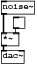
#N canvas 30 68 45 83 10; #X obj 0 42 *~; #X obj 16 21 tgl 15 0 empty empty empty 0 -6 0 8 -262144 -1 -1 0 1 ; #X obj 0 65 dac~; #X obj 0 0 noise~; #X connect 0 0 2 0; #X connect 1 0 0 1; #X connect 3 0 0 0;
Download signal-switch.pd.
Direct level control
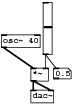
#N canvas 130 152 95 135 10; #X obj 39 88 *~; #X obj 55 3 vsl 12 64 0 1 0 0 empty empty empty 0 -8 0 8 -262144 -1 -1 3300 1; #X obj 39 117 dac~; #X floatatom 69 88 3 0 0 0 - - -; #X obj 0 44 osc~ 40; #X connect 0 0 2 0; #X connect 0 0 2 1; #X connect 1 0 0 1; #X connect 1 0 3 0; #X connect 4 0 0 0;
Download direct-level.pd.
Log law fader
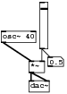
#N canvas 130 152 95 135 10; #X obj 39 88 *~; #X obj 55 3 vsl 12 64 0.01 1 1 0 empty empty empty 0 -8 0 8 -262144 -1 -1 5500 1; #X obj 39 117 dac~; #X floatatom 69 88 3 0 0 0 - - -; #X obj 0 44 osc~ 40; #X connect 0 0 2 0; #X connect 0 0 2 1; #X connect 1 0 0 1; #X connect 1 0 3 0; #X connect 4 0 0 0;
Download direct-log-level.pd.
Soft level as abstraction
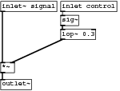
#N canvas 890 456 196 148 10; #X obj -3 -1 inlet~ signal; #X obj 96 -1 inlet control; #X obj 96 22 sig~; #X obj -3 100 *~; #X obj 96 45 lop~ 0.3; #X obj -3 128 outlet~; #X connect 0 0 3 0; #X connect 1 0 2 0; #X connect 2 0 4 0; #X connect 3 0 5 0; #X connect 4 0 3 1;
Download level.pd.
dB/RMS scaled fader
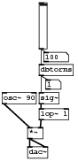
#N canvas 130 152 112 236 10; #X obj 35 117 *~; #X obj 52 -67 vsl 12 64 0.01 100 0 0 empty empty empty 0 -8 0 8 -262144 -1 -1 6300 1; #X obj 35 146 dac~; #X floatatom 62 46 3 0 0 0 - - -; #X obj 52 23 dbtorms; #X floatatom 59 5 5 0 0 0 - - -; #X obj -3 65 osc~ 90; #X obj 52 65 sig~; #X obj 52 89 lop~ 1; #X connect 0 0 2 0; #X connect 0 0 2 1; #X connect 1 0 4 0; #X connect 1 0 5 0; #X connect 4 0 3 0; #X connect 4 0 7 0; #X connect 6 0 0 0; #X connect 7 0 8 0; #X connect 8 0 0 1;
Download signal-dbtorms-level.pd.
MIDI scaled fader
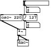
#N canvas 331 397 142 124 10; #X obj 41 -1 *~; #X obj 41 28 dac~; #X floatatom 65 -60 5 0 0 0 - - -; #X floatatom 65 -19 5 0 0 0 - - -; #X obj 60 -77 hsl 64 12 0 127 0 0 empty empty empty -2 -6 0 8 -262144 -1 -1 0 1; #X obj -4 -40 osc~ 220; #X obj 57 -40 / 127; #X connect 0 0 1 0; #X connect 0 0 1 1; #X connect 4 0 2 0; #X connect 4 0 6 0; #X connect 5 0 0 0; #X connect 6 0 3 0; #X connect 6 0 0 1;
Download midi-level.pd.
MIDI CC scaled fader without zipper noise
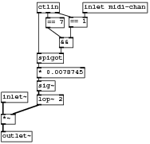
#N canvas 468 188 246 235 10; #X obj 1 187 *~; #X obj 60 110 * 0.0078745; #X obj 60 2 ctlin; #X obj 113 26 == 1; #X obj 97 60 &&; #X obj 60 86 spigot; #X obj 75 27 == 7; #X obj 60 132 sig~; #X obj 60 155 lop~ 2; #X obj 1 151 inlet~; #X obj 1 216 outlet~; #X obj 136 2 inlet midi-chan; #X connect 0 0 10 0; #X connect 1 0 7 0; #X connect 2 0 5 0; #X connect 2 1 6 0; #X connect 2 2 3 0; #X connect 3 0 4 1; #X connect 4 0 5 1; #X connect 5 0 1 0; #X connect 6 0 4 0; #X connect 7 0 8 0; #X connect 8 0 0 1; #X connect 9 0 0 0; #X connect 11 0 3 1;
Download midi-level2.pd.
"Soft" mute switch
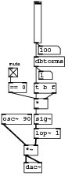
#N canvas 130 152 111 291 10; #X obj 35 161 *~; #X obj 52 -77 vsl 12 64 0.01 100 0 0 empty empty empty 0 -8 0 8 -262144 -1 -1 6300 1; #X obj 35 190 dac~; #X floatatom 60 37 3 0 0 0 - - -; #X obj 52 13 dbtorms; #X floatatom 59 -5 5 0 0 0 - - -; #X obj -3 109 osc~ 90; #X obj 52 109 sig~; #X obj 52 133 lop~ 1; #X obj 52 83 *; #X obj 52 57 t b f; #X obj 9 32 tgl 15 0 empty empty mute 0 -6 1 8 -262144 -1 -1 1 1; #X obj 9 56 == 0; #X connect 0 0 2 0; #X connect 0 0 2 1; #X connect 1 0 4 0; #X connect 1 0 5 0; #X connect 4 0 3 0; #X connect 4 0 10 0; #X connect 6 0 0 0; #X connect 7 0 8 0; #X connect 8 0 0 1; #X connect 9 0 7 0; #X connect 10 0 9 0; #X connect 10 1 9 1; #X connect 11 0 12 0; #X connect 12 0 9 0;
Download signal-mute-level.pd.
Simple linear panner
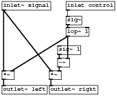
#N canvas 166 157 219 183 10; #X obj -5 -3 inlet~ signal; #X obj 117 -3 inlet control; #X obj 117 25 sig~; #X obj 85 130 *~; #X obj -5 130 *~; #X obj 101 82 sig~ 1; #X obj 101 106 -~; #X obj -5 158 outlet~ left; #X obj 85 158 outlet~ right; #X obj 117 47 lop~ 1; #X connect 0 0 4 0; #X connect 0 0 3 0; #X connect 1 0 2 0; #X connect 2 0 9 0; #X connect 3 0 8 0; #X connect 4 0 7 0; #X connect 5 0 6 0; #X connect 6 0 3 1; #X connect 9 0 6 1; #X connect 9 0 4 1;
Download simpanner.pd.
Root law panner
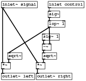
#N canvas 437 524 219 207 10; #X obj -2 -2 inlet~ signal; #X obj 119 -2 inlet control; #X obj 119 23 sig~; #X obj 88 156 *~; #X obj -2 156 *~; #X obj -2 184 outlet~ left; #X obj 88 184 outlet~ right; #X obj 119 48 lop~ 1; #X obj 14 131 sqrt~; #X obj 104 82 sig~ 1; #X obj 104 108 -~; #X obj 104 131 sqrt~; #X connect 0 0 4 0; #X connect 0 0 3 0; #X connect 1 0 2 0; #X connect 2 0 7 0; #X connect 3 0 6 0; #X connect 4 0 5 0; #X connect 7 0 8 0; #X connect 7 0 10 1; #X connect 8 0 4 1; #X connect 9 0 10 0; #X connect 10 0 11 0; #X connect 11 0 3 1;
Download sqrtpanner.pd.
Cosine law panner
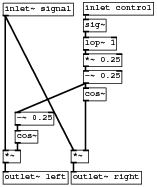
#N canvas 289 265 203 243 10; #X obj -2 -2 inlet~ signal; #X obj 104 -3 inlet control; #X obj 104 19 sig~; #X obj 88 192 *~; #X obj -2 192 *~; #X obj 104 110 cos~; #X obj 104 87 -~ 0.25; #X obj 104 65 *~ 0.25; #X obj -2 220 outlet~ left; #X obj 88 220 outlet~ right; #X obj 104 43 lop~ 1; #X obj 14 166 cos~; #X obj 14 142 -~ 0.25; #X connect 0 0 4 0; #X connect 0 0 3 0; #X connect 1 0 2 0; #X connect 2 0 10 0; #X connect 3 0 9 0; #X connect 4 0 8 0; #X connect 5 0 3 1; #X connect 6 0 5 0; #X connect 6 0 12 0; #X connect 7 0 6 0; #X connect 10 0 7 0; #X connect 11 0 4 1; #X connect 12 0 11 0;
Download cospanner.pd.
MIDI CC cosine law panner for channel strip
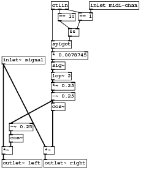
#N canvas 627 173 312 369 10; #X obj 105 108 * 0.0078745; #X obj 105 0 ctlin; #X obj 164 24 == 1; #X obj 142 58 &&; #X obj 105 84 spigot; #X obj 105 130 sig~; #X obj 105 152 lop~ 2; #X obj 187 0 inlet midi-chan; #X obj -1 118 inlet~ signal; #X obj 89 312 *~; #X obj -1 312 *~; #X obj -1 340 outlet~ left; #X obj 89 340 outlet~ right; #X obj 15 286 cos~; #X obj 15 262 -~ 0.25; #X obj 120 25 == 10; #X obj 105 218 cos~; #X obj 105 196 -~ 0.25; #X obj 105 174 *~ 0.25; #X connect 0 0 5 0; #X connect 1 0 4 0; #X connect 1 1 15 0; #X connect 1 2 2 0; #X connect 2 0 3 1; #X connect 3 0 4 1; #X connect 4 0 0 0; #X connect 5 0 6 0; #X connect 6 0 18 0; #X connect 7 0 2 1; #X connect 8 0 10 0; #X connect 8 0 9 0; #X connect 9 0 12 0; #X connect 10 0 11 0; #X connect 13 0 10 1; #X connect 14 0 13 0; #X connect 15 0 3 0; #X connect 16 0 9 1; #X connect 17 0 16 0; #X connect 17 0 14 0; #X connect 18 0 17 0;
Download midi-pan.pd.
Crossfader
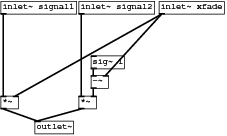
#N canvas 213 275 297 176 10; #X obj 99 121 *~; #X obj -4 121 *~; #X obj 115 68 sig~ 1; #X obj 115 94 -~; #X obj -4 -4 inlet~ signal1; #X obj 99 -4 inlet~ signal2; #X obj 205 -4 inlet~ xfade; #X obj 41 154 outlet~; #X connect 0 0 7 0; #X connect 1 0 7 0; #X connect 2 0 3 0; #X connect 3 0 0 1; #X connect 4 0 1 0; #X connect 5 0 0 0; #X connect 6 0 3 1; #X connect 6 0 1 1;
Download xfader.pd.
Demultiplexer
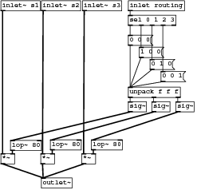
#N canvas 106 379 323 311 10; #X obj -6 247 *~; #X obj 205 -6 inlet routing; #X obj 60 247 *~; #X obj 205 161 sig~; #X obj 244 161 sig~; #X obj 284 161 sig~; #X obj 128 247 *~; #X obj 61 287 outlet~; #X obj 205 137 unpack f f f; #X msg 205 51 0 0 0; #X msg 241 91 0 1 0; #X msg 223 71 1 0 0; #X msg 259 111 0 0 1; #X obj 205 18 sel 0 1 2 3; #X obj 10 225 lop~ 80; #X obj 76 224 lop~ 80; #X obj 144 224 lop~ 80; #X obj -6 -6 inlet~ s1; #X obj 61 -6 inlet~ s2; #X obj 129 -6 inlet~ s3; #X connect 0 0 7 0; #X connect 1 0 13 0; #X connect 2 0 7 0; #X connect 3 0 14 0; #X connect 4 0 15 0; #X connect 5 0 16 0; #X connect 6 0 7 0; #X connect 8 0 3 0; #X connect 8 1 4 0; #X connect 8 2 5 0; #X connect 9 0 8 0; #X connect 10 0 8 0; #X connect 11 0 8 0; #X connect 12 0 8 0; #X connect 13 0 9 0; #X connect 13 1 11 0; #X connect 13 2 10 0; #X connect 13 3 12 0; #X connect 14 0 0 1; #X connect 15 0 2 1; #X connect 16 0 6 1; #X connect 17 0 0 0; #X connect 18 0 2 0; #X connect 19 0 6 0;
Download demultiplex.pd.
Sampler
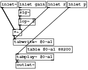
#N canvas 967 439 230 182 10; #X obj 45 -13 sig~; #X obj 45 11 lop~ 2; #X obj 30 39 *~; #X obj 31 64 tabwrite~ \$0-a1; #X obj 38 104 tabplay~ \$0-a1; #X obj 174 -35 inlet p; #X obj 120 -35 inlet r; #X obj -2 -35 inlet~; #X obj 38 125 outlet~; #X obj 45 -35 inlet gain; #X obj 66 84 table \$0-a1 88200; #X connect 0 0 1 0; #X connect 1 0 2 1; #X connect 2 0 3 0; #X connect 4 0 8 0; #X connect 5 0 4 0; #X connect 6 0 3 0; #X connect 7 0 2 0; #X connect 9 0 0 0;
Download sampler.pd.
Using the sampler
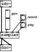
#N canvas 81 34 107 137 10; #X obj 0 85 sampler; #X obj 0 0 adc~; #X obj 55 38 bng 15 250 50 0 empty empty record 20 7 1 8 -262144 -1 -1; #X obj 55 58 bng 15 250 50 0 empty empty play 20 7 1 8 -262144 -1 -1 ; #X obj 14 27 vsl 12 48 0 1 0 0 empty empty gain 16 8 1 8 -262144 -1 -1 2800 1; #X obj 0 119 dac~; #X connect 0 0 5 0; #X connect 0 0 5 1; #X connect 1 0 0 0; #X connect 2 0 0 2; #X connect 3 0 0 3; #X connect 4 0 0 1;
Download sampler-help.pd.
Audio file writer
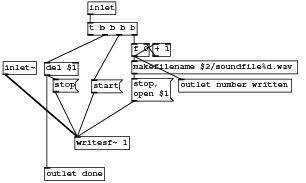
#N canvas 96 48 400 239 10; #X msg 117 103 start; #X msg 66 102 stop; #X obj 198 55 + 1; #X obj 170 55 f 0; #X obj 112 27 t b b b b; #X obj 95 178 writesf~ 1; #X obj 112 0 inlet; #X obj 55 219 outlet done; #X obj 0 79 inlet~; #X obj 170 78 makefilename \$2/soundfile%d.wav; #X obj 55 80 del \$1; #X obj 232 102 outlet number written; #X msg 170 101 stop \, open \$1; #X connect 0 0 5 0; #X connect 1 0 5 0; #X connect 2 0 3 1; #X connect 3 0 2 0; #X connect 3 0 9 0; #X connect 3 0 11 0; #X connect 4 1 10 0; #X connect 4 2 0 0; #X connect 4 3 3 0; #X connect 6 0 4 0; #X connect 8 0 5 0; #X connect 9 0 12 0; #X connect 10 0 1 0; #X connect 10 0 7 0; #X connect 12 0 5 0;
Download writefile.pd.
Using the audio file writer
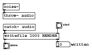
#N canvas 206 143 255 144 10; #X floatatom 151 110 5 0 0 1 written - -; #X obj 9 114 bng 15 250 50 0 empty empty done 18 6 1 8 -262144 -1 -1 ; #X obj 151 59 bng 15 250 50 0 empty empty start 18 6 1 8 -262144 -1 -1; #X obj 7 8 noise~; #X obj 9 87 writefile 1000 RENDER; #X obj 7 32 throw~ audio; #X obj 8 63 catch~ audio; #X connect 2 0 4 1; #X connect 3 0 5 0; #X connect 4 0 1 0; #X connect 4 1 0 0; #X connect 6 0 4 0;
Download file-writer.pd.
Sample loop player
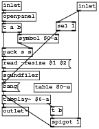
#N canvas 198 374 186 245 10; #X obj 0 0 inlet; #X obj 0 134 soundfiler; #X obj 0 21 openpanel; #X obj 93 202 t b; #X obj 0 203 outlet~; #X msg 0 111 read -resize \$1 \$2; #X obj 0 89 pack s s; #X obj 0 42 t a b; #X msg 0 156 bang; #X obj 93 224 spigot 1; #X obj 144 1 inlet; #X obj 104 39 sel 1; #X obj 61 157 table \$0-a; #X obj 0 180 tabplay~ \$0-a; #X obj 30 63 symbol \$0-a; #X connect 0 0 2 0; #X connect 1 0 8 0; #X connect 2 0 7 0; #X connect 3 0 9 0; #X connect 5 0 1 0; #X connect 6 0 5 0; #X connect 7 0 6 0; #X connect 7 1 14 0; #X connect 8 0 13 0; #X connect 9 0 13 0; #X connect 10 0 11 0; #X connect 10 0 9 1; #X connect 11 0 8 0; #X connect 13 0 4 0; #X connect 13 1 3 0; #X connect 14 0 6 1;
Download loop-sample-player.pd.
Timebase
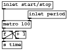
#N canvas 267 119 173 114 10; #X obj 4 45 metro 100; #X obj 62 23 inlet period; #X obj 4 68 f; #X obj 34 68 + 1; #X obj 4 91 s time; #X obj 4 2 inlet start/stop; #X connect 0 0 2 0; #X connect 1 0 0 1; #X connect 2 0 3 0; #X connect 2 0 4 0; #X connect 3 0 2 1; #X connect 5 0 0 0;
Download simple-timebase.pd.
A more sophisticated timebase with swing
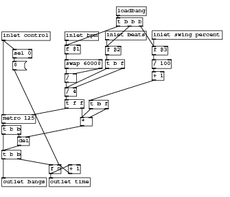
#N canvas 177 384 439 378 10; #X obj 92 317 f 0; #X obj 129 317 + 1; #X obj 1 289 t b b; #X obj 1 220 metro 125; #X obj 1 342 outlet bangs; #X obj 92 342 outlet time; #X obj 122 60 inlet bpm; #X obj 122 114 swap 60000; #X obj 122 141 /; #X obj 200 59 inlet beats; #X obj 122 168 / 4; #X obj 200 114 t b f; #X obj 31 263 del; #X obj 1 241 t b b; #X obj 290 58 inlet swing percent; #X obj 290 114 / 100; #X obj 290 137 + 1; #X obj 122 191 t f f; #X obj 152 225 *; #X obj 169 192 t b f; #X obj 290 88 f \$3; #X obj 221 12 loadbang; #X obj 200 88 f \$2; #X obj 122 86 f \$1; #X obj 221 33 t b b b; #X msg 22 117 0; #X obj 1 60 inlet control; #X obj 22 94 sel 0; #X connect 0 0 1 0; #X connect 0 0 5 0; #X connect 1 0 0 1; #X connect 2 0 4 0; #X connect 2 1 0 0; #X connect 3 0 13 0; #X connect 6 0 23 0; #X connect 7 0 8 0; #X connect 7 1 8 1; #X connect 8 0 10 0; #X connect 9 0 22 0; #X connect 10 0 17 0; #X connect 11 0 10 0; #X connect 11 1 10 1; #X connect 12 0 2 0; #X connect 13 0 2 0; #X connect 13 1 12 0; #X connect 14 0 20 0; #X connect 15 0 16 0; #X connect 16 0 19 0; #X connect 17 0 3 1; #X connect 17 1 18 0; #X connect 18 0 12 1; #X connect 19 0 18 0; #X connect 19 1 18 1; #X connect 20 0 15 0; #X connect 21 0 24 0; #X connect 22 0 11 0; #X connect 23 0 7 0; #X connect 24 0 23 0; #X connect 24 1 22 0; #X connect 24 2 20 0; #X connect 25 0 0 1; #X connect 26 0 3 0; #X connect 26 0 27 0; #X connect 27 0 25 0;
Download timebase.pd.
Select sequencer
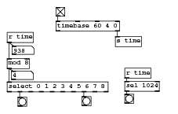
#N canvas 270 74 297 189 10; #X obj 193 49 s time; #X obj 93 0 tgl 15 0 empty empty empty 0 -6 0 8 -262144 -1 -1 1 1; #X obj 11 42 r time; #X obj 29 151 bng 15 50 20 0 empty empty empty 0 -6 0 8 -262144 -1 -1; #X obj 137 150 bng 15 250 50 0 empty empty empty 0 -6 0 8 -262144 -1 -1; #X obj 11 125 select 0 1 2 3 4 5 6 7 8; #X obj 11 86 mod 8; #X floatatom 18 107 5 0 0 0 - - -; #X obj 93 23 timebase 60 4 0; #X obj 209 124 sel 1024; #X obj 209 146 bng 15 250 50 0 empty empty empty 0 -6 0 8 -262144 -1 -1; #X floatatom 19 65 5 0 0 0 - - -; #X obj 209 102 r time; #X connect 1 0 8 0; #X connect 2 0 6 0; #X connect 2 0 11 0; #X connect 5 1 3 0; #X connect 5 7 4 0; #X connect 6 0 5 0; #X connect 6 0 7 0; #X connect 8 1 0 0; #X connect 9 0 10 0; #X connect 12 0 9 0;
Download sequencer-select.pd.
Bar moses (bar offsetting)
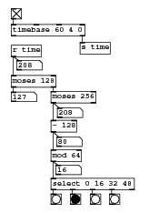
#N canvas 270 74 212 306 10; #X obj 114 45 s time; #X obj 14 -4 tgl 15 0 empty empty empty 0 -6 0 8 -262144 -1 -1 1 1 ; #X obj 72 265 bng 15 100 50 0 empty empty empty 0 -6 0 8 -262144 -1 -1; #X obj 14 19 timebase 60 4 0; #X obj 14 93 moses 128; #X obj 72 158 - 128; #X floatatom 80 182 5 0 0 0 - - -; #X floatatom 81 140 5 0 0 0 - - -; #X obj 14 49 r time; #X obj 72 116 moses 256; #X floatatom 79 223 5 0 0 0 - - -; #X floatatom 22 71 5 0 0 0 - - -; #X obj 72 201 mod 64; #X obj 72 242 select 0 16 32 48; #X floatatom 14 117 5 0 0 0 - - -; #X connect 1 0 3 0; #X connect 3 1 0 0; #X connect 4 0 14 0; #X connect 4 1 9 0; #X connect 5 0 6 0; #X connect 5 0 12 0; #X connect 8 0 4 0; #X connect 8 0 11 0; #X connect 9 0 5 0; #X connect 9 0 7 0; #X connect 12 0 10 0; #X connect 12 0 13 0; #X connect 13 0 2 0;
Download barmoses.pd.
Timeline division
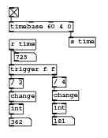
#N canvas 270 74 177 227 10; #X obj 114 45 s time; #X obj 14 -4 tgl 15 0 empty empty empty 0 -6 0 8 -262144 -1 -1 1 1 ; #X obj 14 19 timebase 60 4 0; #X obj 14 49 r time; #X obj 14 114 / 2; #X obj 14 136 change; #X obj 86 134 change; #X obj 86 112 / 4; #X obj 14 91 trigger f f; #X floatatom 14 180 5 0 0 0 - - -; #X floatatom 86 178 5 0 0 0 - - -; #X floatatom 22 71 5 0 0 0 - - -; #X obj 86 156 int; #X obj 14 157 int; #X connect 1 0 2 0; #X connect 2 1 0 0; #X connect 3 0 8 0; #X connect 3 0 11 0; #X connect 4 0 5 0; #X connect 5 0 13 0; #X connect 6 0 12 0; #X connect 7 0 6 0; #X connect 8 0 4 0; #X connect 8 1 7 0; #X connect 12 0 10 0; #X connect 13 0 9 0;
Download timediv.pd.
Synchronous message domain LFO
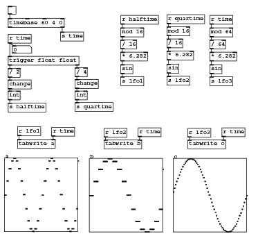
#N canvas 270 74 489 460 10; #X obj 114 45 s time; #X obj 14 -4 tgl 15 0 empty empty empty 0 -6 0 8 -262144 -1 -1 0 1 ; #X obj 14 19 timebase 60 4 0; #X obj 14 49 r time; #X obj 14 114 / 2; #X obj 14 136 change; #X obj 142 135 change; #X obj 142 113 / 4; #X floatatom 22 71 5 0 0 0 - - -; #X obj 142 157 int; #X obj 14 157 int; #X obj 142 179 s quartime; #X obj 14 180 s halftime; #X obj 14 91 trigger float float; #X obj 229 13 r halftime; #X obj 317 12 r quartime; #X obj 229 37 mod 16; #X obj 229 60 / 16; #X obj 229 83 * 6.282; #X obj 229 107 sin; #X obj 32 249 tabwrite a; #X obj 197 250 tabwrite b; #N canvas 0 0 450 300 graph1 0; #X array a 64 float 3; #A 0 0 0 0.382615 0.382615 0.707002 0.707002 0.923794 0.923794 1 1 0.924021 0.924021 0.707421 0.707421 0.383163 0.383163 0.000592621 0.000592621 -0.382067 -0.382067 -0.706583 -0.706583 -0.923567 -0.923567 -1 -1 -0.924248 -0.924248 -0.70784 -0.70784 -0.38371 -0.38371 0 0 0.382615 0.382615 0.707002 0.707002 0.923794 0.923794 1 1 0.924021 0.924021 0.707421 0.707421 0.383163 0.383163 0.000592621 0.000592621 -0.382067 -0.382067 -0.706583 -0.706583 -0.923567 -0.923567 -1 -1 -0.924248 -0.924248 -0.70784 -0.70784 -0.38371 0.924021; #X coords 0 1 63 -1 140 140 1; #X restore 7 284 graph; #N canvas 0 0 450 300 graph1 0; #X array b 64 float 3; #A 0 0 0 0 0 0.382615 0.382615 0.382615 0.382615 0.707002 0.707002 0.707002 0.707002 0.923794 0.923794 0.923794 0.923794 1 1 1 1 0.924021 0.924021 0.924021 0.924021 0.707421 0.707421 0.707421 0.707421 0.383163 0.383163 0.383163 0.383163 0.000592621 0.000592621 0.000592621 0.000592621 -0.382067 -0.382067 -0.382067 -0.382067 -0.706583 -0.706583 -0.706583 -0.706583 -0.923567 -0.923567 -0.923567 -0.923567 -1 -1 -1 -1 -0.924248 -0.924248 -0.924248 -0.924248 -0.70784 -0.70784 -0.70784 -0.70784 -0.38371 -0.38371 -0.38371 0.707002; #X coords 0 1 63 -1 140 140 1; #X restore 169 285 graph; #X obj 97 226 r time; #X obj 262 227 r time; #X obj 32 225 r lfo1; #X obj 197 228 r lfo2; #X obj 229 130 s lfo1; #X obj 317 35 mod 16; #X obj 317 58 / 16; #X obj 317 81 * 6.282; #X obj 317 129 s lfo2; #N canvas 0 0 450 300 graph1 0; #X array c 64 float 3; #A 0 0.0979987 0.195054 0.290232 0.382615 0.471315 0.555478 0.634293 0.707002 0.772905 0.831367 0.881825 0.923794 0.95687 0.980735 0.995157 1 0.995216 0.98085 0.957042 0.924021 0.882105 0.831696 0.773281 0.707421 0.634751 0.555971 0.471838 0.383163 0.290798 0.195635 0.0985884 0.000592621 -0.0974089 -0.194473 -0.289664 -0.382067 -0.470792 -0.554985 -0.633835 -0.706583 -0.772529 -0.831037 -0.881546 -0.923567 -0.956698 -0.980619 -0.995099 -1 -0.995273 -0.980965 -0.957214 -0.924248 -0.882383 -0.832025 -0.773656 -0.70784 -0.635209 -0.556463 -0.47236 -0.38371 -0.291366 -0.196216 -0.0991784 0; #X coords 0 1 63 -1 140 140 1; #X restore 329 285 graph; #X obj 422 227 r time; #X obj 357 250 tabwrite c; #X obj 399 83 * 6.282; #X obj 399 13 r time; #X obj 399 107 sin; #X obj 317 106 sin; #X obj 399 37 mod 64; #X obj 399 60 / 64; #X obj 399 130 s lfo3; #X obj 357 228 r lfo3; #X connect 1 0 2 0; #X connect 2 1 0 0; #X connect 3 0 8 0; #X connect 3 0 13 0; #X connect 4 0 5 0; #X connect 5 0 10 0; #X connect 6 0 9 0; #X connect 7 0 6 0; #X connect 9 0 11 0; #X connect 10 0 12 0; #X connect 13 0 4 0; #X connect 13 1 7 0; #X connect 14 0 16 0; #X connect 15 0 29 0; #X connect 16 0 17 0; #X connect 17 0 18 0; #X connect 18 0 19 0; #X connect 19 0 28 0; #X connect 24 0 20 1; #X connect 25 0 21 1; #X connect 26 0 20 0; #X connect 27 0 21 0; #X connect 29 0 30 0; #X connect 30 0 31 0; #X connect 31 0 39 0; #X connect 34 0 35 1; #X connect 36 0 38 0; #X connect 37 0 40 0; #X connect 38 0 42 0; #X connect 39 0 32 0; #X connect 40 0 41 0; #X connect 41 0 36 0; #X connect 43 0 35 0;
Download lfos.pd.
List sequencing
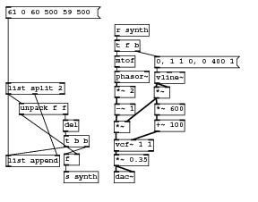
#N canvas 639 191 459 410 10; #N canvas 0 0 685 723 synth1 0; #X obj 200 567 *~ 3; #X obj 263 566 *~ 3; #X obj 198 323 spigot; #X obj 155 124 vsl 12 32 0 0.9 0 1 empty empty decay 0 -8 0 8 -260818 -1 -1 1100 1; #X obj 199 410 hip~ 300; #X obj 198 433 clip~ -0.5 0.5; #X obj 198 460 *~ 2; #X obj 198 170 inlet; #N canvas 0 0 826 721 stringy 0; #X obj 289 193 * 3; #X obj 236 195 * 200; #X obj 279 392 *~; #X obj 272 219 * 1000; #X obj 199 387 *~; #X obj 43 250 inlet; #X text 45 234 trig; #X obj 199 424 outlet~; #X obj 280 424 outlet~; #X obj 151 107 mtof; #X obj 127 73 inlet; #X text 105 54 pitch midi; #X obj 78 166 spigot; #X obj 73 106 moses 1; #X msg 117 138 1; #X msg 64 138 0; #X obj 198 344 *~; #X obj 218 20 loadbang; #X text 211 1 startnice; #X msg 253 45 0.01; #X msg 294 44 0.6; #X msg 218 45 1; #X obj 621 59 inlet; #N canvas 0 0 594 526 fb-vead~ 0; #X obj 281 314 vline~; #X obj 158 65 max 0.1; #X obj 258 65 max 0.1; #X text 156 22 attack (ms); #X text 256 22 decay (ms); #X text 86 22 trigger; #X obj 87 45 inlet; #X obj 158 45 inlet; #X obj 258 45 inlet; #X obj 144 467 outlet~; #X obj 87 65 b; #X obj 87 308 vline~; #X obj 87 215 pack 3 4; #X text 129 283 attack; #X text 317 285 decay; #X msg 87 261 1 \, 0 \$1 0 \, 1 0 \$1; #X msg 281 261 0 \, 1 0 \$1 \, 0 \$2 \$1; #X obj 87 195 f 3; #X obj 251 127 f \$1; #X obj 251 102 loadbang; #X obj 251 153 select 0; #X obj 325 101 loadbang; #X obj 325 152 select 0; #X obj 325 126 f \$2; #X obj 281 361 expr~ pow($v1 \, 6); #X obj 88 359 expr~ 1 - pow($v1 \, 6); #X text 283 391 fb; #X connect 0 0 24 0; #X connect 1 0 17 1; #X connect 2 0 12 1; #X connect 6 0 10 0; #X connect 7 0 1 0; #X connect 8 0 2 0; #X connect 10 0 17 0; #X connect 11 0 25 0; #X connect 12 0 16 0; #X connect 12 0 15 0; #X connect 15 0 11 0; #X connect 16 0 0 0; #X connect 17 0 12 0; #X connect 18 0 20 0; #X connect 19 0 18 0; #X connect 20 1 17 1; #X connect 21 0 23 0; #X connect 22 1 12 1; #X connect 23 0 22 0; #X connect 24 0 9 0; #X connect 25 0 9 0; #X restore 199 318 pd fb-vead~; #N canvas 0 0 450 300 doublesaw 0; #X obj 69 195 hip~ 5; #X obj 69 74 inlet; #X obj 227 69 inlet; #X text 69 52 freq hz; #X text 220 47 fatness; #X obj 70 220 *~ 0.33; #X obj 69 246 outlet~; #X obj 156 194 hip~ 5; #X obj 157 219 *~ 0.33; #X obj 156 245 outlet~; #N canvas 0 0 535 457 supersaw 0; #X obj 39 285 phasor~; #X obj 99 287 phasor~; #X obj 99 208 * 1; #X obj 154 104 random 100; #X obj 236 104 random 100; #X obj 322 105 random 100; #X obj 157 287 phasor~; #X obj 39 311 *~ 0.3; #X obj 99 313 *~ 0.3; #X obj 157 314 *~ 0.3; #X obj 39 261 +; #X obj 99 261 +; #X obj 157 260 +; #X obj 154 161 - 50; #X obj 236 161 - 50; #X obj 322 161 - 50; #X obj 154 185 *; #X obj 236 185 *; #X obj 322 185 *; #X obj 100 340 *~ 0.5; #X obj 154 130 line 100; #X obj 236 130 line 100; #X obj 322 130 line 100; #X obj 154 209 / 100; #X obj 236 208 / 100; #X obj 322 207 / 100; #X obj 236 77 metro 40; #X obj 236 54 loadbang; #X obj 169 32 inlet; #X obj 99 32 inlet; #X text 97 13 freq hz; #X text 168 13 fatness 0-1; #X obj 100 365 outlet~; #X connect 0 0 7 0; #X connect 1 0 8 0; #X connect 2 0 12 0; #X connect 2 0 11 0; #X connect 2 0 10 0; #X connect 3 0 20 0; #X connect 4 0 21 0; #X connect 5 0 22 0; #X connect 6 0 9 0; #X connect 7 0 19 0; #X connect 8 0 19 0; #X connect 9 0 19 0; #X connect 10 0 0 0; #X connect 11 0 1 0; #X connect 12 0 6 0; #X connect 13 0 16 0; #X connect 14 0 17 0; #X connect 15 0 18 0; #X connect 16 0 23 0; #X connect 17 0 24 0; #X connect 18 0 25 0; #X connect 19 0 32 0; #X connect 20 0 13 0; #X connect 21 0 14 0; #X connect 22 0 15 0; #X connect 23 0 10 1; #X connect 24 0 11 1; #X connect 25 0 12 1; #X connect 26 0 3 0; #X connect 26 0 4 0; #X connect 26 0 5 0; #X connect 27 0 26 0; #X connect 28 0 16 1; #X connect 28 0 17 1; #X connect 28 0 18 1; #X connect 29 0 2 0; #X restore 157 159 pd supersaw; #N canvas 0 0 535 457 supersaw 0; #X obj 39 285 phasor~; #X obj 99 287 phasor~; #X obj 99 208 * 1; #X obj 154 104 random 100; #X obj 236 104 random 100; #X obj 322 105 random 100; #X obj 157 287 phasor~; #X obj 39 311 *~ 0.3; #X obj 99 313 *~ 0.3; #X obj 157 314 *~ 0.3; #X obj 39 261 +; #X obj 99 261 +; #X obj 157 260 +; #X obj 154 161 - 50; #X obj 236 161 - 50; #X obj 322 161 - 50; #X obj 154 185 *; #X obj 236 185 *; #X obj 322 185 *; #X obj 100 340 *~ 0.5; #X obj 154 130 line 100; #X obj 236 130 line 100; #X obj 322 130 line 100; #X obj 154 209 / 100; #X obj 236 208 / 100; #X obj 322 207 / 100; #X obj 236 77 metro 40; #X obj 236 54 loadbang; #X obj 169 32 inlet; #X obj 99 32 inlet; #X text 97 13 freq hz; #X text 168 13 fatness 0-1; #X obj 100 365 outlet~; #X connect 0 0 7 0; #X connect 1 0 8 0; #X connect 2 0 12 0; #X connect 2 0 11 0; #X connect 2 0 10 0; #X connect 3 0 20 0; #X connect 4 0 21 0; #X connect 5 0 22 0; #X connect 6 0 9 0; #X connect 7 0 19 0; #X connect 8 0 19 0; #X connect 9 0 19 0; #X connect 10 0 0 0; #X connect 11 0 1 0; #X connect 12 0 6 0; #X connect 13 0 16 0; #X connect 14 0 17 0; #X connect 15 0 18 0; #X connect 16 0 23 0; #X connect 17 0 24 0; #X connect 18 0 25 0; #X connect 19 0 32 0; #X connect 20 0 13 0; #X connect 21 0 14 0; #X connect 22 0 15 0; #X connect 23 0 10 1; #X connect 24 0 11 1; #X connect 25 0 12 1; #X connect 26 0 3 0; #X connect 26 0 4 0; #X connect 26 0 5 0; #X connect 27 0 26 0; #X connect 28 0 16 1; #X connect 28 0 17 1; #X connect 28 0 18 1; #X connect 29 0 2 0; #X restore 71 159 pd supersaw; #X connect 0 0 5 0; #X connect 1 0 11 0; #X connect 1 0 10 0; #X connect 2 0 10 1; #X connect 2 0 11 1; #X connect 5 0 6 0; #X connect 7 0 8 0; #X connect 8 0 9 0; #X connect 10 0 7 0; #X connect 11 0 0 0; #X restore 216 261 pd doublesaw; #X connect 0 0 24 1; #X connect 1 0 23 1; #X connect 2 0 8 0; #X connect 3 0 23 2; #X connect 4 0 7 0; #X connect 5 0 23 0; #X connect 9 0 12 0; #X connect 10 0 9 0; #X connect 10 0 13 0; #X connect 12 0 24 0; #X connect 13 0 15 0; #X connect 13 1 14 0; #X connect 14 0 12 1; #X connect 14 0 16 1; #X connect 15 0 12 0; #X connect 15 0 16 1; #X connect 16 0 2 0; #X connect 16 0 4 0; #X connect 17 0 21 0; #X connect 17 0 19 0; #X connect 17 0 20 0; #X connect 19 0 1 0; #X connect 20 0 3 0; #X connect 21 0 0 0; #X connect 22 0 3 0; #X connect 23 0 16 0; #X connect 24 0 4 1; #X connect 24 1 2 1; #X restore 198 377 pd stringy; #X obj 199 518 vcf~ 100 0.7; #X msg 333 496 0.3; #X obj 333 474 loadbang; #X obj 198 352 t b f; #X obj 106 141 nbx 2 14 1 16 0 1 empty empty chan 0 -6 0 10 -260818 -1 -1 2 256; #X obj 198 218 unpack f f; #X obj 123 648 switch~; #X msg 123 625 1; #X obj 198 193 t l b; #X obj 157 625 > 1; #X obj 157 602 env~; #X obj 199 601 outlet~; #X obj 262 602 outlet~; #X obj 278 454 osc~ 0.212; #X obj 278 495 +~ 400; #X obj 276 475 *~ 800; #X obj 236 300 ==; #X connect 0 0 20 0; #X connect 0 0 19 0; #X connect 1 0 21 0; #X connect 1 0 19 0; #X connect 2 0 12 0; #X connect 3 0 8 2; #X connect 4 0 5 0; #X connect 5 0 6 0; #X connect 6 0 9 0; #X connect 7 0 17 0; #X connect 8 0 4 0; #X connect 8 1 1 0; #X connect 9 0 0 0; #X connect 10 0 9 2; #X connect 11 0 10 0; #X connect 12 0 8 0; #X connect 12 1 8 1; #X connect 13 0 25 1; #X connect 14 0 2 0; #X connect 14 1 25 0; #X connect 16 0 15 0; #X connect 17 0 14 0; #X connect 17 1 16 0; #X connect 18 0 15 0; #X connect 19 0 18 0; #X connect 22 0 24 0; #X connect 23 0 9 1; #X connect 24 0 23 0; #X connect 25 0 2 1; #X coords 0 -1 1 1 85 60 1 100 100; #X restore 23 168 pd synth1; #N canvas 0 0 450 300 fbdelay 0; #X obj 55 136 +~; #X obj 68 39 +~; #X obj 79 110 *~ 0.6; #X obj 54 16 inlet~; #X obj 55 157 outlet~; #X obj 120 16 inlet; #X obj 70 59 delwrite~ \$0-aaab 500; #X obj 95 88 delread~ \$0-aaab 250; #X connect 0 0 4 0; #X connect 1 0 6 0; #X connect 2 0 0 1; #X connect 2 0 1 0; #X connect 3 0 1 1; #X connect 3 0 0 0; #X connect 5 0 7 0; #X connect 7 0 2 0; #X restore 24 241 pd fbdelay; #X obj 88 308 dac~; #N canvas 0 0 450 300 fbdelay2 0; #X obj 55 136 +~; #X obj 68 39 +~; #X obj 79 110 *~ 0.6; #X obj 54 16 inlet~; #X obj 55 157 outlet~; #X obj 120 16 inlet; #X obj 70 59 delwrite~ \$0-aaac 500; #X obj 95 88 delread~ \$0-aaac 250; #X connect 0 0 4 0; #X connect 1 0 6 0; #X connect 2 0 0 1; #X connect 2 0 1 0; #X connect 3 0 1 1; #X connect 3 0 0 0; #X connect 5 0 7 0; #X connect 7 0 2 0; #X restore 199 242 pd fbdelay2; #X msg 123 142 \$1 3; #N canvas 0 0 869 838 liststore 0; #X obj 50 25 inlet; #X msg 50 51 61 0 61 250 73 250 71 1000 68 125 71 125 73 125 61 125 61 250 73 250 71 750 76 250 75 125 71 125 73 125 61 125 61 250 73 250 71 1000 68 125 71 125 73 125 61 125 61 250 73 250 71 750 76 250 75 125 71 125 73 125 61 125 61 250 73 250 71 1000 68 125 71 125 73 125 61 125 61 250 73 250 71 750 76 250 75 125 71 125 73 125 61 125 61 250 73 250 71 1000 68 125 71 125 73 125 61 125 61 250 73 250 71 750 76 250 75 125 71 125 73 125 61 125 61 250 73 250 71 1000 68 125 71 125 73 125 61 125 61 250 73 250 71 750 76 250 75 125 71 125 73 125 61 125 61 250 73 250 71 1000 68 125 71 125 73 125 61 125; #X obj 50 83 outlet; #X connect 0 0 1 0; #X connect 1 0 2 0; #X restore 23 78 pd liststore; #N canvas 0 0 869 838 liststore 0; #X obj 50 25 inlet; #X msg 50 51 61 0 61 250 61 500 59 125 59 250 59 250 61 625 61 250 61 500 59 125 59 250 59 250 61 625 61 250 61 500 59 125 59 250 59 250 61 625 61 250 61 500 59 125 59 250 59 250 61 625 61 250 61 500 59 125 59 250 59 250 61 625 61 250 61 500 59 125 59 250 59 250 61 625 61 250 61 500 59 125 59 250 59 250 61 625 61 250 61 500 59 125 59 250 59 250 61 625 61 250 61 500 59 125 59 250 59 250 61 625 61 250 61 500 59 125 59 250 59 250 61 625 61 250 61 500 59 125 59 250 59 250 61 625; #X obj 50 83 outlet; #X connect 0 0 1 0; #X connect 1 0 2 0; #X restore 124 77 pd liststore; #N canvas 0 0 869 838 liststore 0; #X obj 50 25 inlet; #X msg 50 51 37 8000 37 500 35 375 35 250 35 125 47 250 35 250 37 250 37 500 35 375 35 250 35 125 47 250 35 250 37 250 37 500 35 375 35 250 35 125 47 250 35 250 37 250 37 500 35 375 35 250 35 125 47 250 35 250 37 250 37 500 35 375 35 250 35 125 47 250 35 250 37 250 37 500 35 375 35 250 35 125 47 250 35 250 37 250 37 500 35 375 35 250 35 125 47 250 35 250 37 250; #X obj 50 83 outlet; #X connect 0 0 1 0; #X connect 1 0 2 0; #X restore 226 75 pd liststore; #N canvas 0 0 869 838 liststore 0; #X obj 50 25 inlet; #X msg 50 51 35 16000 38 0 36 0 36 500 38 0 35 0 36 500 35 0 36 500 38 0 35 0 36 250 35 0 36 250 35 0 36 500 38 0 35 0 36 500 35 0 36 500 38 0 35 0 36 500 35 0 36 500 38 0 35 0 36 500 35 0 36 500 38 0 35 0 36 250 35 0 36 250 35 0; #X obj 50 83 outlet; #X connect 0 0 1 0; #X connect 1 0 2 0; #X restore 337 75 pd liststore; #N canvas 82 433 352 428 drumc 0; #X obj 62 361 dac~; #X obj 39 212 spigot; #X obj 76 189 == 10; #X obj 39 256 sel 1; #X obj 127 214 spigot; #X obj 164 191 == 10; #X obj 127 258 sel 1; #X obj 39 234 == 35; #X obj 127 236 == 38; #X obj 202 218 spigot; #X obj 239 195 == 10; #X msg 187 259 bang; #X obj 75 13 inlet; #X obj 75 45 unpack f f; #X obj 140 75 t f f f; #X obj 61 75 t f f f; #X obj 189 300 bng 15 250 50 0 empty empty empty 0 -6 0 8 -262144 -1 -1; #N canvas 0 0 1229 323 -------------------------drumsynth 0; #N canvas 0 0 518 471 clap 0; #X obj 189 66 noise~; #X obj 336 325 *~; #X obj 151 310 *~; #X obj 167 250 *~ 0.8; #X obj 148 343 *~ 0.2; #X obj 169 284 ead~ 1 800; #X obj 376 145 del 30; #X obj 377 165 del 20; #X obj 378 185 del 15; #X obj 376 206 del 10; #X obj 63 217 *~ 0.1; #X obj 85 147 bp~ 1300 10; #X obj 253 147 bp~ 700 10; #X obj 175 147 bp~ 2500 4; #X obj 336 369 bp~ 2700 2; #X obj 336 292 ead~ 3 50; #X obj 3 147 lop~ 8000; #X obj 188 106 hip~ 300; #X obj 322 11 inlet; #X obj 322 40 t b; #X obj 339 415 outlet~; #X obj 339 390 *~ 0.7; #X obj 423 419 switch~; #X obj 422 367 env~; #X obj 423 392 > 1; #X msg 454 393 1; #X connect 0 0 16 0; #X connect 0 0 17 0; #X connect 1 0 14 0; #X connect 2 0 1 1; #X connect 2 0 4 0; #X connect 3 0 2 1; #X connect 4 0 14 0; #X connect 5 0 2 0; #X connect 6 0 7 0; #X connect 6 0 15 0; #X connect 7 0 8 0; #X connect 7 0 15 0; #X connect 8 0 9 0; #X connect 8 0 15 0; #X connect 9 0 15 0; #X connect 10 0 3 0; #X connect 11 0 3 0; #X connect 12 0 3 0; #X connect 13 0 3 0; #X connect 14 0 21 0; #X connect 15 0 1 0; #X connect 16 0 10 0; #X connect 17 0 11 0; #X connect 17 0 12 0; #X connect 17 0 13 0; #X connect 18 0 19 0; #X connect 19 0 5 0; #X connect 19 0 15 0; #X connect 19 0 6 0; #X connect 19 0 25 0; #X connect 21 0 20 0; #X connect 21 0 23 0; #X connect 23 0 24 0; #X connect 24 0 22 0; #X connect 25 0 22 0; #X restore 362 75 pd clap; #N canvas 0 0 450 300 bongol 0; #X obj 143 93 noise~; #X obj 195 66 osc~ 420; #X obj 194 120 clip~ -0.9 0.9; #X obj 102 68 inlet; #X obj 102 97 t b; #X obj 187 185 *~; #X obj 103 142 ead~ 3 150; #X obj 195 93 *~ 20; #X obj 194 144 bp~ 400 25; #X obj 187 227 outlet~; #X obj 187 206 *~ 0.6; #X obj 263 233 switch~; #X obj 262 181 env~; #X obj 263 206 > 1; #X msg 294 207 1; #X connect 0 0 2 0; #X connect 1 0 7 0; #X connect 2 0 8 0; #X connect 3 0 4 0; #X connect 4 0 6 0; #X connect 4 0 14 0; #X connect 5 0 10 0; #X connect 6 0 5 0; #X connect 7 0 2 0; #X connect 8 0 5 1; #X connect 10 0 9 0; #X connect 10 0 12 0; #X connect 12 0 13 0; #X connect 13 0 11 0; #X connect 14 0 11 0; #X restore 288 76 pd bongol; #N canvas 0 0 450 300 bongoh 0; #X obj 143 93 noise~; #X obj 194 120 clip~ -0.9 0.9; #X obj 102 68 inlet; #X obj 102 97 t b; #X obj 187 185 *~; #X obj 195 93 *~ 20; #X obj 187 227 outlet~; #X obj 194 144 bp~ 600 25; #X obj 195 66 osc~ 660; #X obj 103 142 ead~ 3 120; #X obj 186 205 *~ 0.7; #X obj 264 267 switch~; #X obj 263 215 env~; #X obj 264 240 > 1; #X msg 295 241 1; #X connect 0 0 1 0; #X connect 1 0 7 0; #X connect 2 0 3 0; #X connect 3 0 9 0; #X connect 3 0 14 0; #X connect 4 0 10 0; #X connect 5 0 1 0; #X connect 7 0 4 1; #X connect 8 0 5 0; #X connect 9 0 4 0; #X connect 10 0 6 0; #X connect 10 0 12 0; #X connect 12 0 13 0; #X connect 13 0 11 0; #X connect 14 0 11 0; #X restore 216 77 pd bongoh; #N canvas 0 0 464 324 kick 0; #X obj 129 190 osc~ 200; #X obj 129 221 *~; #X obj 195 191 sqrt~; #X obj 128 133 *~ 15; #X obj 128 157 +~ 70; #X obj 128 242 *~ 0.5; #X obj 129 65 ead~ 2 800; #X msg 193 143 0; #X obj 129 106 *~; #X obj 129 12 inlet; #X obj 129 37 t b; #X obj 127 264 outlet~; #X obj 206 311 switch~; #X obj 205 259 env~; #X obj 206 284 > 1; #X msg 237 285 1; #X connect 0 0 1 0; #X connect 1 0 5 0; #X connect 2 0 1 1; #X connect 3 0 4 0; #X connect 4 0 0 0; #X connect 5 0 11 0; #X connect 5 0 13 0; #X connect 6 0 2 0; #X connect 6 0 8 0; #X connect 6 0 8 1; #X connect 7 0 0 1; #X connect 8 0 3 0; #X connect 9 0 10 0; #X connect 10 0 7 0; #X connect 10 0 6 0; #X connect 10 0 15 0; #X connect 13 0 14 0; #X connect 14 0 12 0; #X connect 15 0 12 0; #X restore 103 77 pd kick; #N canvas 0 0 722 561 cym 0; #X obj 140 26 inlet; #X obj 140 51 t b; #X obj 202 400 outlet~; #X obj 83 181 *~; #X obj 230 183 *~; #X obj 150 213 *~; #X obj 139 265 +~; #X obj 150 300 osc~ 5435; #X obj 78 238 sig~ 3435; #X obj 150 236 *~ 12000; #X obj 23 144 osc~ 6221; #X obj 98 144 osc~ 4409; #X obj 172 143 osc~ 3383; #X obj 248 142 osc~ 2441; #X obj 228 235 noise~; #X obj 180 328 +~; #X obj 228 256 bp~ 9000 12; #X obj 230 299 clip~ -0.7 0.7; #X obj 180 354 *~; #X obj 139 79 ead~ 2 8000; #X obj 235 352 *~; #X obj 157 107 ead~ 2 100; #X obj 176 374 *~ 0.05; #X obj 245 373 *~ 0.05; #X obj 310 401 switch~; #X obj 309 349 env~; #X obj 310 374 > 1; #X msg 341 375 1; #X connect 0 0 1 0; #X connect 1 0 19 0; #X connect 1 0 21 0; #X connect 1 0 27 0; #X connect 3 0 5 0; #X connect 4 0 5 1; #X connect 5 0 9 0; #X connect 6 0 7 0; #X connect 7 0 15 0; #X connect 8 0 6 0; #X connect 9 0 6 1; #X connect 10 0 3 0; #X connect 11 0 3 1; #X connect 12 0 4 0; #X connect 13 0 4 1; #X connect 14 0 16 0; #X connect 15 0 18 0; #X connect 15 0 20 0; #X connect 16 0 17 0; #X connect 17 0 15 1; #X connect 18 0 22 0; #X connect 19 0 18 1; #X connect 20 0 23 0; #X connect 21 0 20 1; #X connect 22 0 2 0; #X connect 22 0 25 0; #X connect 23 0 2 0; #X connect 23 0 25 0; #X connect 25 0 26 0; #X connect 26 0 24 0; #X connect 27 0 24 0; #X restore 423 74 pd cym; #N canvas 0 0 783 776 snr 0; #X obj 173 494 outlet~; #X obj 100 65 inlet; #X obj 207 131 noise~; #X obj 99 86 t b; #X obj 95 215 osc~; #X obj 161 337 *~; #X obj 189 204 *~; #X obj 174 361 *~; #X obj 231 329 *~; #X obj 75 137 *~; #X obj 129 359 *~; #X obj 75 162 *~ 12; #X msg 158 64 bang; #X obj 168 391 clip~ 0 1; #X obj 95 238 clip~ -0.8 0.8; #X obj 227 353 *~ 0.1; #X obj 169 412 *~ 0.4; #X obj 115 396 *~ 0.9; #X obj 101 107 ead~ 1 300; #X obj 207 155 bp~ 3300 0.5; #X obj 207 179 lop~ 7000; #X obj 173 465 bp~ 8000 1; #X obj 134 300 clip~ -0.9 0.9; #X obj 132 278 *~ 10000; #X obj 76 191 +~ 150; #X obj 174 436 *~ 0.35; #X obj 252 507 switch~; #X obj 251 455 env~; #X obj 252 480 > 1; #X msg 283 481 1; #X connect 1 0 3 0; #X connect 2 0 19 0; #X connect 3 0 18 0; #X connect 3 0 29 0; #X connect 4 0 14 0; #X connect 5 0 7 0; #X connect 6 0 7 1; #X connect 7 0 13 0; #X connect 8 0 15 0; #X connect 9 0 10 1; #X connect 9 0 11 0; #X connect 10 0 17 0; #X connect 11 0 24 0; #X connect 12 0 3 0; #X connect 13 0 16 0; #X connect 14 0 10 0; #X connect 14 0 23 0; #X connect 15 0 25 0; #X connect 16 0 25 0; #X connect 17 0 25 0; #X connect 18 0 5 1; #X connect 18 0 6 0; #X connect 18 0 9 0; #X connect 18 0 9 1; #X connect 18 0 8 1; #X connect 19 0 8 0; #X connect 19 0 20 0; #X connect 20 0 6 1; #X connect 21 0 0 0; #X connect 21 0 27 0; #X connect 22 0 5 0; #X connect 23 0 22 0; #X connect 24 0 4 0; #X connect 25 0 21 0; #X connect 27 0 28 0; #X connect 28 0 26 0; #X connect 29 0 26 0; #X restore 164 77 pd snr; #N canvas 0 0 575 582 bell 0; #X obj 155 103 wrap~; #X obj 138 76 -~ 0.5; #X obj 154 127 -~ 0.5; #X obj 138 153 -~; #X obj 172 278 wrap~; #X obj 155 255 -~ 0.5; #X obj 171 303 -~ 0.5; #X obj 155 327 -~; #X obj 138 350 *~; #X obj 96 442 outlet~; #X obj 154 232 phasor~; #X obj 228 32 t b; #X obj 218 7 inlet; #X obj 96 386 *~; #X obj 56 103 wrap~; #X obj 39 76 -~ 0.5; #X obj 55 127 -~ 0.5; #X obj 39 153 -~; #X obj 73 278 wrap~; #X obj 56 255 -~ 0.5; #X obj 72 303 -~ 0.5; #X obj 56 327 -~; #X obj 39 350 *~; #X obj 55 232 phasor~; #X obj 39 53 phasor~ 2139; #X obj 138 53 phasor~ 441; #X obj 60 29 *~ 1.33; #X obj 154 179 *~ 1000; #X obj 55 179 *~ 1000; #X obj 228 57 ead~ 1 300; #X obj 95 407 *~ 0.25; #X obj 101 10 sig~ 881; #X obj 54 207 +~ 1763; #X obj 153 207 +~ 884; #X obj 178 459 switch~; #X obj 177 407 env~; #X obj 178 432 > 1; #X msg 209 433 1; #X connect 0 0 2 0; #X connect 1 0 0 0; #X connect 1 0 3 0; #X connect 2 0 3 1; #X connect 3 0 8 0; #X connect 3 0 27 0; #X connect 4 0 6 0; #X connect 5 0 4 0; #X connect 5 0 7 0; #X connect 6 0 7 1; #X connect 7 0 8 1; #X connect 8 0 13 0; #X connect 10 0 5 0; #X connect 11 0 29 0; #X connect 11 0 37 0; #X connect 12 0 11 0; #X connect 13 0 30 0; #X connect 14 0 16 0; #X connect 15 0 14 0; #X connect 15 0 17 0; #X connect 16 0 17 1; #X connect 17 0 22 0; #X connect 17 0 28 0; #X connect 18 0 20 0; #X connect 19 0 18 0; #X connect 19 0 21 0; #X connect 20 0 21 1; #X connect 21 0 22 1; #X connect 22 0 13 0; #X connect 23 0 19 0; #X connect 24 0 15 0; #X connect 25 0 1 0; #X connect 26 0 24 0; #X connect 27 0 33 0; #X connect 28 0 32 0; #X connect 29 0 13 1; #X connect 30 0 9 0; #X connect 30 0 35 0; #X connect 31 0 25 0; #X connect 31 0 26 0; #X connect 32 0 23 0; #X connect 33 0 10 0; #X connect 35 0 36 0; #X connect 36 0 34 0; #X connect 37 0 34 0; #X restore 479 74 pd bell; #N canvas 0 0 722 561 hat 0; #X obj 140 26 inlet; #X obj 140 51 t b; #X obj 202 400 outlet~; #X obj 83 181 *~; #X obj 230 183 *~; #X obj 150 213 *~; #X obj 139 265 +~; #X obj 150 300 osc~ 5435; #X obj 150 236 *~ 12000; #X obj 23 144 osc~ 6221; #X obj 248 142 osc~ 2441; #X obj 228 235 noise~; #X obj 180 328 +~; #X obj 230 299 clip~ -0.7 0.7; #X obj 180 354 *~; #X obj 235 352 *~; #X obj 157 107 ead~ 2 100; #X obj 245 373 *~ 0.06; #X obj 177 374 *~ 0.06; #X obj 78 238 sig~ 7435; #X obj 228 256 bp~ 12000 12; #X obj 172 143 osc~ 3283; #X obj 98 144 osc~ 4109; #X obj 139 79 ead~ 2 200; #X obj 245 101 sqrt~; #X obj 246 77 ead~ 2 800; #X obj 226 25 inlet; #X obj 227 51 t b; #X obj 322 401 switch~; #X obj 321 349 env~; #X obj 322 374 > 1; #X msg 353 375 1; #X connect 0 0 1 0; #X connect 1 0 16 0; #X connect 1 0 23 0; #X connect 1 0 31 0; #X connect 3 0 5 0; #X connect 4 0 5 1; #X connect 5 0 8 0; #X connect 6 0 7 0; #X connect 7 0 12 0; #X connect 8 0 6 1; #X connect 9 0 3 0; #X connect 10 0 4 1; #X connect 11 0 20 0; #X connect 12 0 14 0; #X connect 12 0 15 0; #X connect 13 0 12 1; #X connect 14 0 18 0; #X connect 15 0 17 0; #X connect 16 0 15 1; #X connect 17 0 2 0; #X connect 17 0 29 0; #X connect 18 0 2 0; #X connect 18 0 29 0; #X connect 19 0 6 0; #X connect 20 0 13 0; #X connect 21 0 4 0; #X connect 22 0 3 1; #X connect 23 0 14 1; #X connect 24 0 14 1; #X connect 25 0 24 0; #X connect 26 0 27 0; #X connect 27 0 25 0; #X connect 27 0 16 0; #X connect 27 0 31 0; #X connect 29 0 30 0; #X connect 30 0 28 0; #X connect 31 0 28 0; #X restore 541 74 pd hat; #N canvas 0 0 722 561 crash 0; #X obj 415 47 inlet; #X obj 415 72 t b; #X obj 205 454 outlet~; #X obj 83 181 *~; #X obj 230 183 *~; #X obj 150 213 *~; #X obj 139 265 +~; #X obj 138 288 osc~ 5435; #X obj 78 238 sig~ 3435; #X obj 150 236 *~ 12000; #X obj 248 142 osc~ 2441; #X obj 228 235 noise~; #X obj 180 354 *~; #X obj 235 352 *~; #X obj 23 144 osc~ 12221; #X obj 100 144 osc~ 8309; #X obj 172 143 osc~ 2383; #X obj 228 278 clip~ -0.9 0.9; #X obj 347 229 noise~; #X obj 347 272 clip~ -0.9 0.9; #X obj 228 256 bp~ 8000 4; #X obj 414 100 ead~ 2 5000; #X obj 142 319 *~; #X obj 307 99 ead~ 4000 3000; #X obj 245 373 *~ 0.2; #X obj 320 349 *~; #X obj 529 97 ead~ 1 200; #X obj 432 128 ead~ 300 7000; #X obj 177 374 *~ 0.2; #X obj 348 377 *~ 0.4; #X obj 346 250 bp~ 4000 7; #X obj 204 433 *~ 0.8; #X obj 302 486 switch~; #X obj 301 434 env~; #X obj 302 459 > 1; #X msg 333 460 1; #X connect 0 0 1 0; #X connect 1 0 21 0; #X connect 1 0 23 0; #X connect 1 0 26 0; #X connect 1 0 27 0; #X connect 1 0 35 0; #X connect 3 0 5 0; #X connect 4 0 5 1; #X connect 5 0 9 0; #X connect 6 0 7 0; #X connect 7 0 22 0; #X connect 8 0 6 0; #X connect 9 0 6 1; #X connect 10 0 4 1; #X connect 11 0 20 0; #X connect 12 0 28 0; #X connect 13 0 24 0; #X connect 14 0 3 0; #X connect 15 0 3 1; #X connect 16 0 4 0; #X connect 17 0 12 0; #X connect 18 0 30 0; #X connect 19 0 13 0; #X connect 19 0 25 0; #X connect 20 0 17 0; #X connect 21 0 12 1; #X connect 22 0 12 0; #X connect 22 0 25 0; #X connect 23 0 22 1; #X connect 24 0 31 0; #X connect 25 0 29 0; #X connect 26 0 25 1; #X connect 27 0 13 1; #X connect 28 0 31 0; #X connect 29 0 31 0; #X connect 30 0 19 0; #X connect 31 0 2 0; #X connect 31 0 33 0; #X connect 33 0 34 0; #X connect 34 0 32 0; #X connect 35 0 32 0; #X restore 593 74 pd crash; #N canvas 0 0 331 381 accent 0; #X obj 48 193 sig~ 0.6; #X obj 49 218 +~; #X obj 122 143 line~; #X obj 121 168 *~; #X obj 32 244 *~; #X msg 125 89 1 1; #X obj 228 90 r timeacc; #X obj 163 115 pack 0 150; #X obj 163 90 del 4; #X obj 132 51 t b; #X obj 30 137 inlet~; #X obj 33 281 outlet~; #X obj 132 19 inlet; #X obj 121 193 *~ 0.6; #X connect 0 0 1 0; #X connect 1 0 4 1; #X connect 2 0 3 0; #X connect 2 0 3 1; #X connect 3 0 13 0; #X connect 4 0 11 0; #X connect 5 0 2 0; #X connect 6 0 7 1; #X connect 7 0 2 0; #X connect 8 0 7 0; #X connect 9 0 5 0; #X connect 9 0 8 0; #X connect 10 0 4 0; #X connect 12 0 9 0; #X connect 13 0 1 1; #X restore 395 224 pd accent; #X obj 396 252 outlet~; #X obj 103 52 inlet; #X obj 163 51 inlet; #X obj 216 53 inlet; #X obj 289 51 inlet; #X obj 362 51 inlet; #X obj 424 48 inlet; #X obj 478 49 inlet; #X obj 538 34 inlet; #X obj 578 23 inlet; #X obj 595 48 inlet; #X obj 853 27 inlet; #N canvas 0 0 753 637 cowbell 0; #X obj 121 192 osc~ 440; #X obj 189 190 osc~ 440; #X obj 254 189 osc~ 440; #X obj 322 187 osc~ 440; #X obj 122 219 *~; #X obj 122 241 *~; #X obj 123 263 *~; #X obj 124 290 cos~; #X obj 125 315 *~; #X obj 172 287 *~ 0.3; #X obj 39 290 *~; #X obj 121 133 * 2.666; #X obj 189 132 * 2.333; #X obj 254 132 * 0.875; #X obj 322 132 * 0.666; #X msg 205 100 0; #X obj 190 55 t b f; #X obj 124 340 *~ 0.2; #X msg 190 28 680; #X obj 121 162 +; #X obj 322 159 +; #X obj 254 159 +; #X obj 189 160 +; #X obj 264 79 random 100; #X obj 264 100 / 50; #X obj 339 79 random 100; #X obj 414 78 random 100; #X obj 339 100 / 40; #X obj 414 99 / 30; #X obj 173 264 ead~ 1 400; #X obj 38 264 ead~ 1 900; #X obj 124 365 outlet~; #X obj 149 28 inlet; #X obj 283 352 switch~; #X obj 282 300 env~; #X obj 283 325 > 1; #X msg 314 326 1; #X connect 0 0 4 0; #X connect 1 0 4 1; #X connect 2 0 5 1; #X connect 3 0 6 1; #X connect 4 0 5 0; #X connect 5 0 6 0; #X connect 6 0 7 0; #X connect 6 0 10 1; #X connect 7 0 8 0; #X connect 8 0 17 0; #X connect 9 0 8 1; #X connect 10 0 17 0; #X connect 11 0 19 0; #X connect 12 0 22 0; #X connect 13 0 21 0; #X connect 14 0 20 0; #X connect 15 0 0 1; #X connect 15 0 1 1; #X connect 15 0 2 1; #X connect 15 0 3 1; #X connect 16 0 15 0; #X connect 16 0 23 0; #X connect 16 0 25 0; #X connect 16 0 26 0; #X connect 16 0 29 0; #X connect 16 0 30 0; #X connect 16 0 36 0; #X connect 16 1 11 0; #X connect 16 1 12 0; #X connect 16 1 13 0; #X connect 16 1 14 0; #X connect 17 0 31 0; #X connect 17 0 34 0; #X connect 18 0 16 0; #X connect 19 0 0 0; #X connect 20 0 3 0; #X connect 21 0 2 0; #X connect 22 0 1 0; #X connect 23 0 24 0; #X connect 24 0 22 1; #X connect 25 0 27 0; #X connect 26 0 28 0; #X connect 27 0 21 1; #X connect 28 0 20 1; #X connect 29 0 9 0; #X connect 30 0 10 0; #X connect 32 0 16 0; #X connect 34 0 35 0; #X connect 35 0 33 0; #X connect 36 0 33 0; #X restore 746 76 pd cowbell; #X msg 761 50 660; #N canvas 674 360 546 484 handrum 0; #X obj 121 192 osc~ 440; #X obj 189 190 osc~ 440; #X obj 254 189 osc~ 440; #X obj 322 187 osc~ 440; #X obj 122 219 *~; #X obj 122 241 *~; #X obj 123 263 *~; #X obj 124 311 cos~; #X obj 125 344 *~; #X obj 39 290 *~; #X msg 205 100 0; #X obj 120 30 t b f; #X obj 126 435 outlet~; #X obj 120 4 inlet; #X obj 121 133 * 0.8; #X obj 189 132 * 1.6666; #X obj 254 132 * 0.833; #X obj 123 287 clip~ -1 1; #X obj 121 165 + 7.88; #X obj 189 163 + 8.66; #X floatatom 323 227 5 0 0 0 - - -; #X floatatom 375 229 5 0 0 0 - - -; #X floatatom 427 230 5 0 0 0 - - -; #X floatatom 483 231 5 0 0 0 - - -; #X obj 322 161 + 7.88; #X obj 254 162 + 4.725; #X obj 206 263 ead~ 1 400; #X obj 37 264 ead~ 1 500; #X obj 126 410 *~ 0.4; #X obj 205 286 *~ 0.15; #X obj 81 370 clip~ -0.7 0.5; #X msg 449 87 2.66666; #X msg 388 87 1.14141; #X obj 322 30 t b f; #X obj 322 4 inlet; #X obj 322 133 *; #X obj 245 413 switch~; #X obj 244 361 env~; #X obj 245 386 > 1; #X msg 276 387 1; #X connect 0 0 4 0; #X connect 1 0 4 1; #X connect 2 0 5 1; #X connect 3 0 6 1; #X connect 4 0 5 0; #X connect 5 0 6 0; #X connect 6 0 9 1; #X connect 6 0 17 0; #X connect 7 0 8 0; #X connect 8 0 28 0; #X connect 9 0 30 0; #X connect 10 0 0 1; #X connect 10 0 1 1; #X connect 10 0 2 1; #X connect 10 0 3 1; #X connect 11 0 27 0; #X connect 11 0 26 0; #X connect 11 0 10 0; #X connect 11 0 39 0; #X connect 11 1 32 0; #X connect 11 1 35 0; #X connect 11 1 16 0; #X connect 11 1 15 0; #X connect 11 1 14 0; #X connect 13 0 11 0; #X connect 14 0 18 0; #X connect 15 0 19 0; #X connect 16 0 25 0; #X connect 17 0 7 0; #X connect 18 0 0 0; #X connect 18 0 20 0; #X connect 19 0 1 0; #X connect 19 0 21 0; #X connect 24 0 3 0; #X connect 24 0 23 0; #X connect 25 0 2 0; #X connect 25 0 22 0; #X connect 26 0 29 0; #X connect 27 0 9 0; #X connect 28 0 12 0; #X connect 28 0 37 0; #X connect 29 0 8 1; #X connect 30 0 28 0; #X connect 31 0 35 1; #X connect 32 0 35 1; #X connect 33 0 27 0; #X connect 33 0 26 0; #X connect 33 0 10 0; #X connect 33 1 31 0; #X connect 33 1 35 0; #X connect 33 1 16 0; #X connect 33 1 15 0; #X connect 33 1 14 0; #X connect 34 0 33 0; #X connect 35 0 24 0; #X connect 37 0 38 0; #X connect 38 0 36 0; #X connect 39 0 36 0; #X restore 659 75 pd handrum; #X msg 660 50 82.47; #X msg 705 50 82.47; #X msg 794 51 440; #X obj 656 24 inlet; #X obj 711 23 inlet; #X obj 764 25 inlet; #X obj 806 25 inlet; #X connect 0 0 9 0; #X connect 1 0 9 0; #X connect 2 0 9 0; #X connect 3 0 9 0; #X connect 4 0 9 0; #X connect 5 0 9 0; #X connect 6 0 9 0; #X connect 7 0 9 0; #X connect 8 0 9 0; #X connect 9 0 10 0; #X connect 11 0 3 0; #X connect 12 0 5 0; #X connect 13 0 2 0; #X connect 14 0 1 0; #X connect 15 0 0 0; #X connect 16 0 4 0; #X connect 17 0 6 0; #X connect 18 0 7 0; #X connect 19 0 7 1; #X connect 20 0 8 0; #X connect 21 0 9 1; #X connect 22 0 9 0; #X connect 23 0 22 0; #X connect 24 0 9 0; #X connect 25 0 24 0; #X connect 26 0 24 1; #X connect 27 0 22 0; #X connect 28 0 25 0; #X connect 29 0 26 0; #X connect 30 0 23 0; #X connect 31 0 27 0; #X restore 64 331 pd -------------------------drumsynth; #X floatatom 230 249 5 0 0 0 - - -; #X floatatom 26 56 5 0 0 0 - - -; #X floatatom 163 57 5 0 0 0 - - -; #X connect 1 0 7 0; #X connect 2 0 1 1; #X connect 3 0 17 0; #X connect 4 0 8 0; #X connect 5 0 4 1; #X connect 6 0 17 1; #X connect 7 0 3 0; #X connect 8 0 6 0; #X connect 9 0 11 0; #X connect 9 0 18 0; #X connect 10 0 9 1; #X connect 11 0 16 0; #X connect 12 0 13 0; #X connect 13 0 15 0; #X connect 13 0 19 0; #X connect 13 1 14 0; #X connect 13 1 20 0; #X connect 14 0 2 0; #X connect 14 1 5 0; #X connect 14 2 10 0; #X connect 15 0 1 0; #X connect 15 1 4 0; #X connect 15 2 9 0; #X connect 16 0 17 7; #X connect 17 0 0 0; #X connect 17 0 0 1; #X restore 337 163 pd drumc; #X obj 167 23 bng 15 250 50 0 empty empty play 0 -6 0 8 -258699 -1 -1; #X msg 337 137 \$1 10; #X msg 226 141 \$1 5; #X msg 212 20 0 0; #N canvas 0 0 685 723 synth1 0; #X obj 200 567 *~ 3; #X obj 263 566 *~ 3; #X obj 198 323 spigot; #X obj 155 124 vsl 12 32 0 0.9 0 1 empty empty decay 0 -8 0 8 -260818 -1 -1 1700 1; #X obj 199 410 hip~ 300; #X obj 198 433 clip~ -0.5 0.5; #X obj 198 460 *~ 2; #X obj 198 170 inlet; #N canvas 0 0 826 721 stringy 0; #X obj 289 193 * 3; #X obj 236 195 * 200; #X obj 279 392 *~; #X obj 272 219 * 1000; #X obj 199 387 *~; #X obj 43 250 inlet; #X text 45 234 trig; #X obj 199 424 outlet~; #X obj 280 424 outlet~; #X obj 151 107 mtof; #X obj 127 73 inlet; #X text 105 54 pitch midi; #X obj 78 166 spigot; #X obj 73 106 moses 1; #X msg 117 138 1; #X msg 64 138 0; #X obj 198 344 *~; #X obj 218 20 loadbang; #X text 211 1 startnice; #X msg 253 45 0.01; #X msg 294 44 0.6; #X msg 218 45 1; #X obj 621 59 inlet; #N canvas 0 0 594 526 fb-vead~ 0; #X obj 281 314 vline~; #X obj 158 65 max 0.1; #X obj 258 65 max 0.1; #X text 156 22 attack (ms); #X text 256 22 decay (ms); #X text 86 22 trigger; #X obj 87 45 inlet; #X obj 158 45 inlet; #X obj 258 45 inlet; #X obj 144 467 outlet~; #X obj 87 65 b; #X obj 87 308 vline~; #X obj 87 215 pack 3 4; #X text 129 283 attack; #X text 317 285 decay; #X msg 87 261 1 \, 0 \$1 0 \, 1 0 \$1; #X msg 281 261 0 \, 1 0 \$1 \, 0 \$2 \$1; #X obj 87 195 f 3; #X obj 251 127 f \$1; #X obj 251 102 loadbang; #X obj 251 153 select 0; #X obj 325 101 loadbang; #X obj 325 152 select 0; #X obj 325 126 f \$2; #X obj 281 361 expr~ pow($v1 \, 6); #X obj 88 359 expr~ 1 - pow($v1 \, 6); #X text 283 391 fb; #X connect 0 0 24 0; #X connect 1 0 17 1; #X connect 2 0 12 1; #X connect 6 0 10 0; #X connect 7 0 1 0; #X connect 8 0 2 0; #X connect 10 0 17 0; #X connect 11 0 25 0; #X connect 12 0 16 0; #X connect 12 0 15 0; #X connect 15 0 11 0; #X connect 16 0 0 0; #X connect 17 0 12 0; #X connect 18 0 20 0; #X connect 19 0 18 0; #X connect 20 1 17 1; #X connect 21 0 23 0; #X connect 22 1 12 1; #X connect 23 0 22 0; #X connect 24 0 9 0; #X connect 25 0 9 0; #X restore 199 318 pd fb-vead~; #N canvas 0 0 450 300 doublesaw 0; #X obj 69 195 hip~ 5; #X obj 69 74 inlet; #X obj 227 69 inlet; #X text 69 52 freq hz; #X text 220 47 fatness; #X obj 70 220 *~ 0.33; #X obj 69 246 outlet~; #X obj 156 194 hip~ 5; #X obj 157 219 *~ 0.33; #X obj 156 245 outlet~; #N canvas 0 0 535 457 supersaw 0; #X obj 39 285 phasor~; #X obj 99 287 phasor~; #X obj 99 208 * 1; #X obj 154 104 random 100; #X obj 236 104 random 100; #X obj 322 105 random 100; #X obj 157 287 phasor~; #X obj 39 311 *~ 0.3; #X obj 99 313 *~ 0.3; #X obj 157 314 *~ 0.3; #X obj 39 261 +; #X obj 99 261 +; #X obj 157 260 +; #X obj 154 161 - 50; #X obj 236 161 - 50; #X obj 322 161 - 50; #X obj 154 185 *; #X obj 236 185 *; #X obj 322 185 *; #X obj 100 340 *~ 0.5; #X obj 154 130 line 100; #X obj 236 130 line 100; #X obj 322 130 line 100; #X obj 154 209 / 100; #X obj 236 208 / 100; #X obj 322 207 / 100; #X obj 236 77 metro 40; #X obj 236 54 loadbang; #X obj 169 32 inlet; #X obj 99 32 inlet; #X text 97 13 freq hz; #X text 168 13 fatness 0-1; #X obj 100 365 outlet~; #X connect 0 0 7 0; #X connect 1 0 8 0; #X connect 2 0 12 0; #X connect 2 0 11 0; #X connect 2 0 10 0; #X connect 3 0 20 0; #X connect 4 0 21 0; #X connect 5 0 22 0; #X connect 6 0 9 0; #X connect 7 0 19 0; #X connect 8 0 19 0; #X connect 9 0 19 0; #X connect 10 0 0 0; #X connect 11 0 1 0; #X connect 12 0 6 0; #X connect 13 0 16 0; #X connect 14 0 17 0; #X connect 15 0 18 0; #X connect 16 0 23 0; #X connect 17 0 24 0; #X connect 18 0 25 0; #X connect 19 0 32 0; #X connect 20 0 13 0; #X connect 21 0 14 0; #X connect 22 0 15 0; #X connect 23 0 10 1; #X connect 24 0 11 1; #X connect 25 0 12 1; #X connect 26 0 3 0; #X connect 26 0 4 0; #X connect 26 0 5 0; #X connect 27 0 26 0; #X connect 28 0 16 1; #X connect 28 0 17 1; #X connect 28 0 18 1; #X connect 29 0 2 0; #X restore 157 159 pd supersaw; #N canvas 0 0 535 457 supersaw 0; #X obj 39 285 phasor~; #X obj 99 287 phasor~; #X obj 99 208 * 1; #X obj 154 104 random 100; #X obj 236 104 random 100; #X obj 322 105 random 100; #X obj 157 287 phasor~; #X obj 39 311 *~ 0.3; #X obj 99 313 *~ 0.3; #X obj 157 314 *~ 0.3; #X obj 39 261 +; #X obj 99 261 +; #X obj 157 260 +; #X obj 154 161 - 50; #X obj 236 161 - 50; #X obj 322 161 - 50; #X obj 154 185 *; #X obj 236 185 *; #X obj 322 185 *; #X obj 100 340 *~ 0.5; #X obj 154 130 line 100; #X obj 236 130 line 100; #X obj 322 130 line 100; #X obj 154 209 / 100; #X obj 236 208 / 100; #X obj 322 207 / 100; #X obj 236 77 metro 40; #X obj 236 54 loadbang; #X obj 169 32 inlet; #X obj 99 32 inlet; #X text 97 13 freq hz; #X text 168 13 fatness 0-1; #X obj 100 365 outlet~; #X connect 0 0 7 0; #X connect 1 0 8 0; #X connect 2 0 12 0; #X connect 2 0 11 0; #X connect 2 0 10 0; #X connect 3 0 20 0; #X connect 4 0 21 0; #X connect 5 0 22 0; #X connect 6 0 9 0; #X connect 7 0 19 0; #X connect 8 0 19 0; #X connect 9 0 19 0; #X connect 10 0 0 0; #X connect 11 0 1 0; #X connect 12 0 6 0; #X connect 13 0 16 0; #X connect 14 0 17 0; #X connect 15 0 18 0; #X connect 16 0 23 0; #X connect 17 0 24 0; #X connect 18 0 25 0; #X connect 19 0 32 0; #X connect 20 0 13 0; #X connect 21 0 14 0; #X connect 22 0 15 0; #X connect 23 0 10 1; #X connect 24 0 11 1; #X connect 25 0 12 1; #X connect 26 0 3 0; #X connect 26 0 4 0; #X connect 26 0 5 0; #X connect 27 0 26 0; #X connect 28 0 16 1; #X connect 28 0 17 1; #X connect 28 0 18 1; #X connect 29 0 2 0; #X restore 71 159 pd supersaw; #X connect 0 0 5 0; #X connect 1 0 11 0; #X connect 1 0 10 0; #X connect 2 0 10 1; #X connect 2 0 11 1; #X connect 5 0 6 0; #X connect 7 0 8 0; #X connect 8 0 9 0; #X connect 10 0 7 0; #X connect 11 0 0 0; #X restore 216 261 pd doublesaw; #X connect 0 0 24 1; #X connect 1 0 23 1; #X connect 2 0 8 0; #X connect 3 0 23 2; #X connect 4 0 7 0; #X connect 5 0 23 0; #X connect 9 0 12 0; #X connect 10 0 9 0; #X connect 10 0 13 0; #X connect 12 0 24 0; #X connect 13 0 15 0; #X connect 13 1 14 0; #X connect 14 0 12 1; #X connect 14 0 16 1; #X connect 15 0 12 0; #X connect 15 0 16 1; #X connect 16 0 2 0; #X connect 16 0 4 0; #X connect 17 0 21 0; #X connect 17 0 19 0; #X connect 17 0 20 0; #X connect 19 0 1 0; #X connect 20 0 3 0; #X connect 21 0 0 0; #X connect 22 0 3 0; #X connect 23 0 16 0; #X connect 24 0 4 1; #X connect 24 1 2 1; #X restore 198 377 pd stringy; #X obj 199 518 vcf~ 100 0.7; #X msg 333 496 0.3; #X obj 333 474 loadbang; #X obj 198 352 t b f; #X obj 106 141 nbx 2 14 1 16 0 1 empty empty chan 0 -6 0 10 -260818 -1 -1 3 256; #X obj 198 218 unpack f f; #X obj 123 648 switch~; #X msg 123 625 1; #X obj 198 193 t l b; #X obj 157 625 > 1; #X obj 157 602 env~; #X obj 199 601 outlet~; #X obj 262 602 outlet~; #X obj 278 454 osc~ 0.212; #X obj 278 495 +~ 400; #X obj 276 475 *~ 800; #X obj 236 300 ==; #X connect 0 0 20 0; #X connect 0 0 19 0; #X connect 1 0 21 0; #X connect 1 0 19 0; #X connect 2 0 12 0; #X connect 3 0 8 2; #X connect 4 0 5 0; #X connect 5 0 6 0; #X connect 6 0 9 0; #X connect 7 0 17 0; #X connect 8 0 4 0; #X connect 8 1 1 0; #X connect 9 0 0 0; #X connect 10 0 9 2; #X connect 11 0 10 0; #X connect 12 0 8 0; #X connect 12 1 8 1; #X connect 13 0 25 1; #X connect 14 0 2 0; #X connect 14 1 25 0; #X connect 16 0 15 0; #X connect 17 0 14 0; #X connect 17 1 16 0; #X connect 18 0 15 0; #X connect 19 0 18 0; #X connect 22 0 24 0; #X connect 23 0 9 1; #X connect 24 0 23 0; #X connect 25 0 2 1; #X coords 0 -1 1 1 85 60 1 100 100; #X restore 122 168 pd synth1; #N canvas 0 0 685 723 synth1 0; #X obj 200 567 *~ 3; #X obj 263 566 *~ 3; #X obj 198 323 spigot; #X obj 155 124 vsl 12 32 0 0.9 0 1 empty empty decay 0 -8 0 8 -260818 -1 -1 2700 1; #X obj 199 410 hip~ 300; #X obj 198 433 clip~ -0.5 0.5; #X obj 198 460 *~ 2; #X obj 198 170 inlet; #N canvas 0 0 826 721 stringy 0; #X obj 289 193 * 3; #X obj 236 195 * 200; #X obj 279 392 *~; #X obj 272 219 * 1000; #X obj 199 387 *~; #X obj 43 250 inlet; #X text 45 234 trig; #X obj 199 424 outlet~; #X obj 280 424 outlet~; #X obj 151 107 mtof; #X obj 127 73 inlet; #X text 105 54 pitch midi; #X obj 78 166 spigot; #X obj 73 106 moses 1; #X msg 117 138 1; #X msg 64 138 0; #X obj 198 344 *~; #X obj 218 20 loadbang; #X text 211 1 startnice; #X msg 253 45 0.01; #X msg 294 44 0.6; #X msg 218 45 1; #X obj 621 59 inlet; #N canvas 0 0 594 526 fb-vead~ 0; #X obj 281 314 vline~; #X obj 158 65 max 0.1; #X obj 258 65 max 0.1; #X text 156 22 attack (ms); #X text 256 22 decay (ms); #X text 86 22 trigger; #X obj 87 45 inlet; #X obj 158 45 inlet; #X obj 258 45 inlet; #X obj 144 467 outlet~; #X obj 87 65 b; #X obj 87 308 vline~; #X obj 87 215 pack 3 4; #X text 129 283 attack; #X text 317 285 decay; #X msg 87 261 1 \, 0 \$1 0 \, 1 0 \$1; #X msg 281 261 0 \, 1 0 \$1 \, 0 \$2 \$1; #X obj 87 195 f 3; #X obj 251 127 f \$1; #X obj 251 102 loadbang; #X obj 251 153 select 0; #X obj 325 101 loadbang; #X obj 325 152 select 0; #X obj 325 126 f \$2; #X obj 281 361 expr~ pow($v1 \, 6); #X obj 88 359 expr~ 1 - pow($v1 \, 6); #X text 283 391 fb; #X connect 0 0 24 0; #X connect 1 0 17 1; #X connect 2 0 12 1; #X connect 6 0 10 0; #X connect 7 0 1 0; #X connect 8 0 2 0; #X connect 10 0 17 0; #X connect 11 0 25 0; #X connect 12 0 16 0; #X connect 12 0 15 0; #X connect 15 0 11 0; #X connect 16 0 0 0; #X connect 17 0 12 0; #X connect 18 0 20 0; #X connect 19 0 18 0; #X connect 20 1 17 1; #X connect 21 0 23 0; #X connect 22 1 12 1; #X connect 23 0 22 0; #X connect 24 0 9 0; #X connect 25 0 9 0; #X restore 199 318 pd fb-vead~; #N canvas 0 0 450 300 doublesaw 0; #X obj 69 195 hip~ 5; #X obj 69 74 inlet; #X obj 227 69 inlet; #X text 69 52 freq hz; #X text 220 47 fatness; #X obj 70 220 *~ 0.33; #X obj 69 246 outlet~; #X obj 156 194 hip~ 5; #X obj 157 219 *~ 0.33; #X obj 156 245 outlet~; #N canvas 0 0 535 457 supersaw 0; #X obj 39 285 phasor~; #X obj 99 287 phasor~; #X obj 99 208 * 1; #X obj 154 104 random 100; #X obj 236 104 random 100; #X obj 322 105 random 100; #X obj 157 287 phasor~; #X obj 39 311 *~ 0.3; #X obj 99 313 *~ 0.3; #X obj 157 314 *~ 0.3; #X obj 39 261 +; #X obj 99 261 +; #X obj 157 260 +; #X obj 154 161 - 50; #X obj 236 161 - 50; #X obj 322 161 - 50; #X obj 154 185 *; #X obj 236 185 *; #X obj 322 185 *; #X obj 100 340 *~ 0.5; #X obj 154 130 line 100; #X obj 236 130 line 100; #X obj 322 130 line 100; #X obj 154 209 / 100; #X obj 236 208 / 100; #X obj 322 207 / 100; #X obj 236 77 metro 40; #X obj 236 54 loadbang; #X obj 169 32 inlet; #X obj 99 32 inlet; #X text 97 13 freq hz; #X text 168 13 fatness 0-1; #X obj 100 365 outlet~; #X connect 0 0 7 0; #X connect 1 0 8 0; #X connect 2 0 12 0; #X connect 2 0 11 0; #X connect 2 0 10 0; #X connect 3 0 20 0; #X connect 4 0 21 0; #X connect 5 0 22 0; #X connect 6 0 9 0; #X connect 7 0 19 0; #X connect 8 0 19 0; #X connect 9 0 19 0; #X connect 10 0 0 0; #X connect 11 0 1 0; #X connect 12 0 6 0; #X connect 13 0 16 0; #X connect 14 0 17 0; #X connect 15 0 18 0; #X connect 16 0 23 0; #X connect 17 0 24 0; #X connect 18 0 25 0; #X connect 19 0 32 0; #X connect 20 0 13 0; #X connect 21 0 14 0; #X connect 22 0 15 0; #X connect 23 0 10 1; #X connect 24 0 11 1; #X connect 25 0 12 1; #X connect 26 0 3 0; #X connect 26 0 4 0; #X connect 26 0 5 0; #X connect 27 0 26 0; #X connect 28 0 16 1; #X connect 28 0 17 1; #X connect 28 0 18 1; #X connect 29 0 2 0; #X restore 157 159 pd supersaw; #N canvas 0 0 535 457 supersaw 0; #X obj 39 285 phasor~; #X obj 99 287 phasor~; #X obj 99 208 * 1; #X obj 154 104 random 100; #X obj 236 104 random 100; #X obj 322 105 random 100; #X obj 157 287 phasor~; #X obj 39 311 *~ 0.3; #X obj 99 313 *~ 0.3; #X obj 157 314 *~ 0.3; #X obj 39 261 +; #X obj 99 261 +; #X obj 157 260 +; #X obj 154 161 - 50; #X obj 236 161 - 50; #X obj 322 161 - 50; #X obj 154 185 *; #X obj 236 185 *; #X obj 322 185 *; #X obj 100 340 *~ 0.5; #X obj 154 130 line 100; #X obj 236 130 line 100; #X obj 322 130 line 100; #X obj 154 209 / 100; #X obj 236 208 / 100; #X obj 322 207 / 100; #X obj 236 77 metro 40; #X obj 236 54 loadbang; #X obj 169 32 inlet; #X obj 99 32 inlet; #X text 97 13 freq hz; #X text 168 13 fatness 0-1; #X obj 100 365 outlet~; #X connect 0 0 7 0; #X connect 1 0 8 0; #X connect 2 0 12 0; #X connect 2 0 11 0; #X connect 2 0 10 0; #X connect 3 0 20 0; #X connect 4 0 21 0; #X connect 5 0 22 0; #X connect 6 0 9 0; #X connect 7 0 19 0; #X connect 8 0 19 0; #X connect 9 0 19 0; #X connect 10 0 0 0; #X connect 11 0 1 0; #X connect 12 0 6 0; #X connect 13 0 16 0; #X connect 14 0 17 0; #X connect 15 0 18 0; #X connect 16 0 23 0; #X connect 17 0 24 0; #X connect 18 0 25 0; #X connect 19 0 32 0; #X connect 20 0 13 0; #X connect 21 0 14 0; #X connect 22 0 15 0; #X connect 23 0 10 1; #X connect 24 0 11 1; #X connect 25 0 12 1; #X connect 26 0 3 0; #X connect 26 0 4 0; #X connect 26 0 5 0; #X connect 27 0 26 0; #X connect 28 0 16 1; #X connect 28 0 17 1; #X connect 28 0 18 1; #X connect 29 0 2 0; #X restore 71 159 pd supersaw; #X connect 0 0 5 0; #X connect 1 0 11 0; #X connect 1 0 10 0; #X connect 2 0 10 1; #X connect 2 0 11 1; #X connect 5 0 6 0; #X connect 7 0 8 0; #X connect 8 0 9 0; #X connect 10 0 7 0; #X connect 11 0 0 0; #X restore 216 261 pd doublesaw; #X connect 0 0 24 1; #X connect 1 0 23 1; #X connect 2 0 8 0; #X connect 3 0 23 2; #X connect 4 0 7 0; #X connect 5 0 23 0; #X connect 9 0 12 0; #X connect 10 0 9 0; #X connect 10 0 13 0; #X connect 12 0 24 0; #X connect 13 0 15 0; #X connect 13 1 14 0; #X connect 14 0 12 1; #X connect 14 0 16 1; #X connect 15 0 12 0; #X connect 15 0 16 1; #X connect 16 0 2 0; #X connect 16 0 4 0; #X connect 17 0 21 0; #X connect 17 0 19 0; #X connect 17 0 20 0; #X connect 19 0 1 0; #X connect 20 0 3 0; #X connect 21 0 0 0; #X connect 22 0 3 0; #X connect 23 0 16 0; #X connect 24 0 4 1; #X connect 24 1 2 1; #X restore 198 377 pd stringy; #X obj 199 518 vcf~ 100 0.7; #X msg 333 496 0.3; #X obj 333 474 loadbang; #X obj 198 352 t b f; #X obj 106 141 nbx 2 14 1 16 0 1 empty empty chan 0 -6 0 10 -260818 -1 -1 5 256; #X obj 198 218 unpack f f; #X obj 123 648 switch~; #X msg 123 625 1; #X obj 198 193 t l b; #X obj 157 625 > 1; #X obj 157 602 env~; #X obj 199 601 outlet~; #X obj 262 602 outlet~; #X obj 278 454 osc~ 0.212; #X obj 278 495 +~ 400; #X obj 276 475 *~ 800; #X obj 236 300 ==; #X connect 0 0 20 0; #X connect 0 0 19 0; #X connect 1 0 21 0; #X connect 1 0 19 0; #X connect 2 0 12 0; #X connect 3 0 8 2; #X connect 4 0 5 0; #X connect 5 0 6 0; #X connect 6 0 9 0; #X connect 7 0 17 0; #X connect 8 0 4 0; #X connect 8 1 1 0; #X connect 9 0 0 0; #X connect 10 0 9 2; #X connect 11 0 10 0; #X connect 12 0 8 0; #X connect 12 1 8 1; #X connect 13 0 25 1; #X connect 14 0 2 0; #X connect 14 1 25 0; #X connect 16 0 15 0; #X connect 17 0 14 0; #X connect 17 1 16 0; #X connect 18 0 15 0; #X connect 19 0 18 0; #X connect 22 0 24 0; #X connect 23 0 9 1; #X connect 24 0 23 0; #X connect 25 0 2 1; #X coords 0 -1 1 1 85 60 1 100 100; #X restore 222 169 pd synth1; #N canvas 0 0 450 300 listseq 0; #X obj 219 161 del; #X obj 135 213 list append; #X obj 154 136 unpack f f; #X obj 135 106 list split 2; #X obj 220 211 f; #X obj 220 184 t b b; #X obj 135 59 inlet; #X obj 220 237 outlet; #X connect 0 0 5 0; #X connect 1 0 3 0; #X connect 2 0 4 1; #X connect 2 1 0 0; #X connect 3 0 2 0; #X connect 3 1 1 1; #X connect 4 0 7 0; #X connect 5 0 1 0; #X connect 5 1 4 0; #X connect 6 0 3 0; #X restore 226 107 pd listseq; #X msg 22 144 \$1 2; #N canvas 0 0 450 300 listseq 0; #X obj 219 161 del; #X obj 135 213 list append; #X obj 154 136 unpack f f; #X obj 135 106 list split 2; #X obj 220 211 f; #X obj 220 184 t b b; #X obj 135 59 inlet; #X obj 220 237 outlet; #X connect 0 0 5 0; #X connect 1 0 3 0; #X connect 2 0 4 1; #X connect 2 1 0 0; #X connect 3 0 2 0; #X connect 3 1 1 1; #X connect 4 0 7 0; #X connect 5 0 1 0; #X connect 5 1 4 0; #X connect 6 0 3 0; #X restore 337 107 pd listseq; #N canvas 0 0 450 300 listseq 0; #X obj 219 161 del; #X obj 135 213 list append; #X obj 154 136 unpack f f; #X obj 135 106 list split 2; #X obj 220 211 f; #X obj 220 184 t b b; #X obj 135 59 inlet; #X obj 220 237 outlet; #X connect 0 0 5 0; #X connect 1 0 3 0; #X connect 2 0 4 1; #X connect 2 1 0 0; #X connect 3 0 2 0; #X connect 3 1 1 1; #X connect 4 0 7 0; #X connect 5 0 1 0; #X connect 5 1 4 0; #X connect 6 0 3 0; #X restore 23 107 pd listseq; #N canvas 0 0 450 300 listseq 0; #X obj 219 161 del; #X obj 135 213 list append; #X obj 154 136 unpack f f; #X obj 135 106 list split 2; #X obj 220 211 f; #X obj 220 184 t b b; #X obj 135 59 inlet; #X obj 220 237 outlet; #X connect 0 0 5 0; #X connect 1 0 3 0; #X connect 2 0 4 1; #X connect 2 1 0 0; #X connect 3 0 2 0; #X connect 3 1 1 1; #X connect 4 0 7 0; #X connect 5 0 1 0; #X connect 5 1 4 0; #X connect 6 0 3 0; #X restore 124 107 pd listseq; #X connect 0 0 1 0; #X connect 0 1 2 1; #X connect 1 0 2 0; #X connect 3 0 2 0; #X connect 4 0 14 0; #X connect 5 0 19 0; #X connect 6 0 20 0; #X connect 7 0 16 0; #X connect 8 0 18 0; #X connect 10 0 5 0; #X connect 10 0 6 0; #X connect 10 0 7 0; #X connect 10 0 8 0; #X connect 11 0 9 0; #X connect 12 0 15 0; #X connect 13 0 16 0; #X connect 13 0 18 0; #X connect 13 0 20 0; #X connect 13 0 19 0; #X connect 14 0 2 0; #X connect 14 1 3 0; #X connect 15 0 3 0; #X connect 15 1 2 1; #X connect 16 0 12 0; #X connect 17 0 0 0; #X connect 18 0 11 0; #X connect 19 0 17 0; #X connect 20 0 4 0;
Download listsequencer.pd.
Textfile based MIDI sequencer
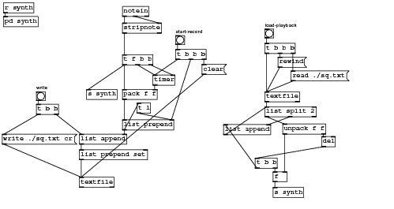
#N canvas 249 69 655 347 10; #X obj 58 152 bng 15 250 50 0 empty empty write 0 -6 1 8 -262144 -1 -1; #X obj 130 223 list append; #X obj 226 171 t l; #X obj 202 199 list prepend; #X obj 130 295 textfile; #X msg 335 106 clear; #X obj 253 124 timer; #X obj 202 148 pack f f; #X obj 202 90 t f b b; #X obj 291 58 bng 15 250 50 0 empty empty start-record 0 -6 1 8 -262144 -1 -1; #X obj 291 81 t b b b; #X obj 58 173 t b b; #X obj 535 227 del; #X obj 371 207 list append; #X obj 470 206 unpack f f; #X obj 440 177 list split 2; #X obj 454 286 f; #X obj 424 263 t b b; #X obj 454 312 s synth; #X obj 3 3 r synth; #N canvas 0 0 450 300 synth 0; #X obj 177 107 vline~; #X obj 176 129 *~; #X obj 118 83 mtof; #X obj 117 180 *~; #X obj 118 60 t f b; #X msg 177 84 0 \, 1 1 0 \, 0 400 1; #X obj 118 106 phasor~; #X obj 118 128 *~ 2; #X obj 118 154 -~ 1; #X obj 117 207 vcf~ 1 1; #X obj 177 178 +~ 100; #X obj 177 154 *~ 600; #X obj 117 254 dac~; #X obj 117 229 *~ 0.35; #X obj 118 35 inlet; #X connect 0 0 1 0; #X connect 0 0 1 1; #X connect 1 0 3 1; #X connect 1 0 11 0; #X connect 2 0 6 0; #X connect 3 0 9 0; #X connect 4 0 2 0; #X connect 4 1 5 0; #X connect 5 0 0 0; #X connect 6 0 7 0; #X connect 7 0 8 0; #X connect 8 0 3 0; #X connect 9 0 13 0; #X connect 10 0 9 1; #X connect 11 0 10 0; #X connect 13 0 12 0; #X connect 13 0 12 1; #X connect 14 0 4 0; #X restore 3 26 pd synth; #X obj 142 148 s synth; #X obj 440 152 textfile; #X obj 440 47 bng 15 250 50 0 empty empty load-playback 0 -6 1 8 -262144 -1 -1; #X msg 1 223 write ./sq.txt cr; #X msg 484 117 read ./sq.txt; #X msg 462 94 rewind; #X obj 440 71 t b b b; #X obj 202 9 notein; #X obj 202 37 stripnote; #X obj 130 249 list prepend set; #X connect 0 0 11 0; #X connect 1 0 30 0; #X connect 2 0 3 1; #X connect 3 0 2 0; #X connect 3 0 1 1; #X connect 5 0 4 0; #X connect 6 0 7 1; #X connect 7 0 3 0; #X connect 8 0 7 0; #X connect 8 0 21 0; #X connect 8 1 6 0; #X connect 8 2 6 1; #X connect 9 0 10 0; #X connect 10 0 6 0; #X connect 10 1 3 1; #X connect 10 2 5 0; #X connect 11 0 24 0; #X connect 11 1 1 0; #X connect 12 0 17 0; #X connect 13 0 15 0; #X connect 14 0 16 1; #X connect 14 1 12 0; #X connect 15 0 14 0; #X connect 15 1 13 1; #X connect 16 0 18 0; #X connect 17 0 13 0; #X connect 17 1 16 0; #X connect 19 0 20 0; #X connect 22 0 15 0; #X connect 23 0 27 0; #X connect 24 0 4 0; #X connect 25 0 22 0; #X connect 26 0 22 0; #X connect 27 0 22 0; #X connect 27 1 26 0; #X connect 27 2 25 0; #X connect 28 0 29 0; #X connect 28 1 29 1; #X connect 29 0 8 0; #X connect 30 0 4 0;
Download textfileseq.pd.
Audio effect : chorus
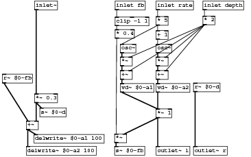
#N canvas 0 0 450 300 10; #X obj 58 257 delwrite~ \$0-a1 100; #X obj 43 280 delwrite~ \$0-a2 100; #X obj 293 159 vd~ \$0-a2; #X obj 224 159 vd~ \$0-a1; #X obj 383 29 * 2; #X obj 293 108 *~; #X obj 293 134 +~; #X obj 224 108 *~; #X obj 224 134 +~; #X obj 293 57 + 1; #X obj 293 30 * 5; #X obj 69 206 s~ \$0-d; #X obj 365 158 r~ \$0-d; #X obj 59 179 *~ 0.3; #X obj 293 208 *~ 1; #X obj -3 141 r~ \$0-fb; #X obj 213 280 s~ \$0-fb; #X obj 213 256 *~; #X obj 43 231 +~; #X obj 214 55 * 0.4; #X obj 293 83 osc~; #X obj 224 83 osc~; #X obj 59 0 inlet~; #X obj 214 0 inlet fb; #X obj 214 31 clip -1 1; #X obj 293 0 inlet rate; #X obj 383 0 inlet depth; #X obj 293 280 outlet~ l; #X obj 365 280 outlet~ r; #X connect 2 0 14 0; #X connect 3 0 14 0; #X connect 4 0 6 1; #X connect 4 0 5 1; #X connect 4 0 7 1; #X connect 4 0 8 1; #X connect 5 0 6 0; #X connect 6 0 2 0; #X connect 7 0 8 0; #X connect 8 0 3 0; #X connect 9 0 20 0; #X connect 10 0 9 0; #X connect 10 0 21 0; #X connect 12 0 28 0; #X connect 13 0 11 0; #X connect 13 0 18 1; #X connect 14 0 17 1; #X connect 14 0 27 0; #X connect 15 0 18 0; #X connect 17 0 16 0; #X connect 18 0 0 0; #X connect 18 0 1 0; #X connect 19 0 17 0; #X connect 20 0 5 0; #X connect 21 0 7 0; #X connect 22 0 13 0; #X connect 23 0 24 0; #X connect 24 0 19 0; #X connect 25 0 10 0; #X connect 26 0 4 0;
Download chorus-abstraction.pd.
Audio effect : chorus in use
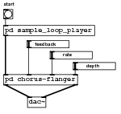
#N canvas 266 472 194 184 10; #X obj -52 14 bng 15 250 50 0 empty empty start 0 -8 1 8 -262144 -1 -1; #N canvas 146 53 480 299 chorus-flanger 1; #X obj 58 257 delwrite~ \$0-a1 100; #X obj 43 280 delwrite~ \$0-a2 100; #X obj 293 159 vd~ \$0-a2; #X obj 224 159 vd~ \$0-a1; #X obj 383 29 * 2; #X obj 293 108 *~; #X obj 293 134 +~; #X obj 224 108 *~; #X obj 224 134 +~; #X obj 293 57 + 1; #X obj 293 30 * 5; #X obj 69 206 s~ \$0-d; #X obj 365 158 r~ \$0-d; #X obj 59 179 *~ 0.3; #X obj 293 208 *~ 1; #X obj -3 141 r~ \$0-fb; #X obj 213 280 s~ \$0-fb; #X obj 213 256 *~; #X obj 43 231 +~; #X obj 214 55 * 0.4; #X obj 293 83 osc~; #X obj 224 83 osc~; #X obj 59 0 inlet~; #X obj 214 0 inlet fb; #X obj 214 31 clip -1 1; #X obj 293 0 inlet rate; #X obj 383 0 inlet depth; #X obj 293 280 outlet~ l; #X obj 365 280 outlet~ r; #X connect 2 0 14 0; #X connect 3 0 14 0; #X connect 4 0 6 1; #X connect 4 0 5 1; #X connect 4 0 7 1; #X connect 4 0 8 1; #X connect 5 0 6 0; #X connect 6 0 2 0; #X connect 7 0 8 0; #X connect 8 0 3 0; #X connect 9 0 20 0; #X connect 10 0 9 0; #X connect 10 0 21 0; #X connect 12 0 28 0; #X connect 13 0 11 0; #X connect 13 0 18 1; #X connect 14 0 17 1; #X connect 14 0 27 0; #X connect 15 0 18 0; #X connect 17 0 16 0; #X connect 18 0 0 0; #X connect 18 0 1 0; #X connect 19 0 17 0; #X connect 20 0 5 0; #X connect 21 0 7 0; #X connect 22 0 13 0; #X connect 23 0 24 0; #X connect 24 0 19 0; #X connect 25 0 10 0; #X connect 26 0 4 0; #X restore -52 121 pd chorus-flanger; #X obj -13 158 dac~; #X obj -11 65 hsl 64 12 -1 1 0 1 empty empty feedback 10 6 1 8 -262144 -1 -1 0 1; #N canvas 0 0 450 300 sample_loop_player 0; #X obj 149 28 inlet; #X obj 314 58 table sampy; #X obj 160 100 soundfiler; #X obj 161 122 t b; #X obj 162 245 outlet~; #X obj 151 53 openpanel; #X msg 162 75 read -resize \$1 sampy; #X obj 158 164 tabplay~ sampy; #X obj 239 190 t b; #X text 263 189 loop it; #X connect 0 0 5 0; #X connect 2 0 3 0; #X connect 3 0 7 0; #X connect 5 0 6 0; #X connect 6 0 2 0; #X connect 7 0 4 0; #X connect 7 1 8 0; #X connect 8 0 7 0; #X restore -52 40 pd sample_loop_player; #X obj 27 83 hsl 64 12 0 1 0 1 empty empty rate 18 6 1 8 -262144 -1 -1 0 1; #X obj 65 101 hsl 64 12 0 1 0 1 empty empty depth 18 6 1 8 -262144 -1 -1 0 1; #X connect 0 0 4 0; #X connect 1 0 2 0; #X connect 1 1 2 1; #X connect 3 0 1 1; #X connect 4 0 1 0; #X connect 5 0 1 2; #X connect 6 0 1 3;
Download simple-chorus.pd.
Audio effect : reverb
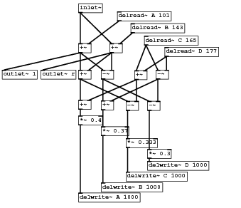
#N canvas 0 0 445 382 10; #X obj 145 79 +~; #X obj 203 79 +~; #X obj 145 128 +~; #X obj 249 129 +~; #X obj 187 128 -~; #X obj 289 128 -~; #X obj 145 184 +~; #X obj 187 185 +~; #X obj 233 186 -~; #X obj 273 186 -~; #X obj 273 297 delwrite~ D 1000; #X obj 233 317 delwrite~ C 1000; #X obj 187 337 delwrite~ B 1000; #X obj 145 356 delwrite~ A 1000; #X obj 145 213 *~ 0.4; #X obj 187 233 *~ 0.37; #X obj 233 255 *~ 0.333; #X obj 273 275 *~ 0.3; #X obj 217 20 delread~ A 101; #X obj 242 42 delread~ B 143; #X obj 267 65 delread~ C 165; #X obj 305 86 delread~ D 177; #X obj 145 5 inlet~; #X obj 75 128 outlet~ r; #X obj 3 128 outlet~ l; #X connect 0 0 2 0; #X connect 0 0 4 0; #X connect 0 0 24 0; #X connect 1 0 2 1; #X connect 1 0 4 1; #X connect 1 0 23 0; #X connect 2 0 6 0; #X connect 2 0 8 0; #X connect 3 0 8 1; #X connect 3 0 6 1; #X connect 4 0 7 0; #X connect 4 0 9 0; #X connect 5 0 7 1; #X connect 5 0 9 1; #X connect 6 0 14 0; #X connect 7 0 15 0; #X connect 8 0 16 0; #X connect 9 0 17 0; #X connect 14 0 13 0; #X connect 15 0 12 0; #X connect 16 0 11 0; #X connect 17 0 10 0; #X connect 18 0 0 1; #X connect 19 0 1 1; #X connect 20 0 5 0; #X connect 20 0 3 0; #X connect 21 0 5 1; #X connect 21 0 3 1; #X connect 22 0 0 0; #X connect 22 0 1 0;
Download reverb.pd.
- Index
- Chapters 9 to 14
- Introductory Pure Data
- 9: Starting with Pure Data
- 10: Using Pure Data
- 11: Pure Data Audio
- 12: Abstraction
- 13: Shaping Sound
- 14: Pure Data Essentials
- Chapters 17 to 21
- Techniques
- 17: Summation
- 18: Tables
- 19: Non-linear
- 20: Modulation
- 21: Granular Methods
- Practical Series 1
- Artificial Sounds
- 1: Pedestrian Crossing
- 2: Telephone Siganlling Tones
- 3: DTMF Dialling Tones
- 4: Alarm and Menu Sounds
- 5: Police Siren
- Practical Series 2
- Idiophonics
- 6: Telephone Bell
- 7: Bouncing Ball
- 8: Rolling Tin Can
- 9: Creaking Door
- 10: Boingy Sound
- Practical Series 3
- Nature
- 11: Fire
- 12: Bubbles
- 13: Running Water
- 14: Pouring
- 15: Rain
- 16: Electricity
- 17: Thunder
- 18: Wind
- Practical Series 4
- Machines
- 19: Switches
- 20: Clocks
- 21: Motors
- 22: Cars
- 23: Fans
- 24: Jet Engine
- 25: Helicopter
- Practical Series 5
- Practical Series 6
- Project Mayhem
- 30: Guns
- 31: Explosions
- 32: Rocket Launcher
- Practical Series 7
- Science Fiction
- 33: Transporter
- 34: R2D2
- 35: Red Alert